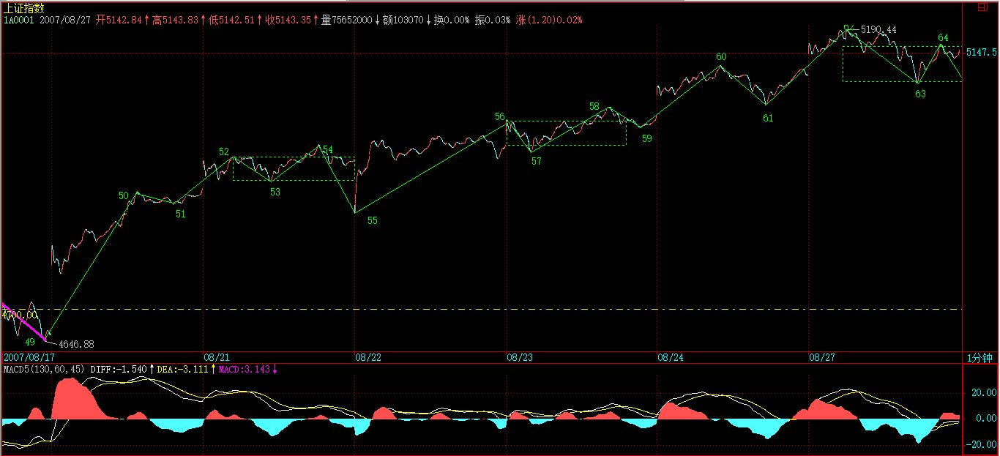

(2007-08-23 22:35:20)
说起获利，最一般的想法就是低买高卖就获利，但这是一种很笼统的看法，没什么操作和指导意义。
任何市场的获利机会，在本ID理论下，都有一个最明确的分类，用本ID理论的语言来说，只有两种：中枢上移与中枢震荡。【韶山映山红】技术分析角度看，市场获利机会的完全分类只有两种：中枢上移与中枢震荡。】
【韶山映山红】市场获利机会的绝对分类只有两种：中枢上移与中枢震荡。一直是这样背课文的。今天看这段，突然想到，中枢震荡是次级别操作，且不管她。中枢上移是三买的操作。那么，一买、二买不要面子啊？算什么啊？★可以做个专题，以后研究。】
【韶山映山红】
显然，站在走势类型同级别的角度，【韶山映山红】站在走势类型自己的角度看，也就是站在中枢级别的角度看。】中枢上移就是意味着该级别的上涨走势，【韶山映山红】中枢上移是指第三类买点之后次级别的非背驰上涨，如果没有小转大引起本级别转折，就会走出上涨趋势。】而中枢震荡，有可能是该级别的盘整，或者是该级别上涨中的新中枢形成后的延续过程。【韶山映山红】中枢震荡有可能是a+A+b的A中枢震荡，最终只是一个盘整走势类型。也可能是形成a+A+b+B+c趋势之后的B中枢震荡。这里说“新中枢形成后的延续过程”，也就不包括形成中枢的过程。构成中枢的前两段次级别走势归属于中枢上移的结束部分，构成中枢的第三段次级别走势是下跌，结束点要么是中枢上移的起点，要么是中枢延伸震荡的起点。】
任何市场的获利机会，都逃脱不了这两种模式，只是百姓日用而不知，本ID理论而知。【韶山映山红】走势不是在中枢想震荡中，就是在离开中枢的移动过程中，所以也只能围绕这两种运动形成获利模式。走势就是这样的，缠论只是从完全分类的角度去解读。】
【韶山映山红】“一阴一阳之谓道。继之者善也，成之者性也。仁者见之谓之仁，知者见之谓之知。百姓日用而不知，故君子之道鲜矣。显诸仁，藏诸用，鼓万物而不与圣人同忧，盛德大业至矣哉！富有之谓大业。日新之谓盛德。生生之谓易。成象之谓乾。效法之谓坤。极数知来之谓占。通变之谓事。阴阳不测之谓神。 ”《周易·系辞上》 】
在你的操作级别下，中枢上移中，是不存在着任何理论上短差机会的，【韶山映山红】离开中枢的非背驰上涨，没有abc盘整背驰，也就无法形成本级别的区间套判断，只能是次级别离开段自己内部的背驰判断，所以没有本级别的操作。次级别走势内部背驰也不卖出，即使小转大也要等再次的次级别反弹。】除非这种上移结束进入新中枢的形成与震荡。【韶山映山红】次级别走势形成abc盘整背驰，就是“上移结束”，就要“进入新中枢的形成与震荡”，也就成为了“除非”的情况，可以开始中枢震荡的打短差操作。全仓的离场可以等新中枢的第三类卖点。】
而中枢震荡，就是短差的理论天堂。【韶山映山红】中枢震荡的起始点是次级别走势形成abc盘整背驰，就是“上移结束”、“进入新中枢的形成与震荡”的点。 理论天堂，看上去很美。】只要在任何的中枢震荡向上的离开段卖点区域走掉，必然有机会在其后的中枢震荡中回补回来，【韶山映山红】中枢震荡向上的离开段有abc盘整背驰就可以卖，没有abc盘整背驰、有a+A盘整背驰也可以卖，只是要注意形成第三类买点的回补。】唯一需要一定技术要求的，就是对第三类买点的判断，如果出现第三买点你不回补回来，那么就有可能错过一次新的中枢上移，【韶山映山红】形成第三类买点就要全部回补，如果有“一次新的中枢上移”就暂停打短差。小心防备三买转二卖。】当然，还有相当的机会，是进入一个更大的中枢震荡，那样，你回补回来的机会还是绝对的。【韶山映山红】形成第三类买点就要全部回补，之后的再次向上离开有abc盘整背驰或者有a+A+b盘整背驰，就没有“新的中枢上移”，这是本级别卖点。可以继续次级别打短差，也可以考虑切换到更大级别的操作。】
很多人，经常说自己按本ID的理论做短差买不回来，这没什么奇怪的。如果你连中枢都没分清楚，级别也没搞懂，中枢上移与中枢震荡也分不清楚，第三类买点就更糊涂，那也能短差成功，只能说你刚好运气好，死耗子摔到瞎猫爪子上了，天上哪能天天掉死耗子？【韶山映山红】打短差要降级操作，操作每一个次级别才能完整的打短差，最后的回补机会是第三类买点。 本级别中枢延伸或者中枢扩展，都属于本级别中枢震荡，同时也是形成高级别中枢的过程，整个过程都属于打短差的范围。 形成第三类买点是暂停打短差的分界，形成中枢上移就离开分界，否则就是分界扩大。】
以上，只是在某一级别上的应用。【韶山映山红】操作级别的一个走势过程中的可能操作。】
用同一级别的视角去看走势，就如同用一个横切面去考察，而当把不同的级别进行纵向的比较，对走势就有了一个纵向的视野。【韶山映山红】走势是从小级别开始到大级别演化，不断生长的，所以从小到大的不同级别是纵向，同级别分解是横切面。】
一个月线级别的上涨，在年线级别上，可能就是一个中枢震荡中的一个小段。【韶山映山红】完全分类，小级别可能就是大级别一个中枢震荡中的一个小段，也可能是大级别中枢移动的一小个小段。】
站在年中枢的角度，如果这上涨是从年中枢之下向中枢的回拉，那么，中枢的位置，显然就构成需要消化的阻力；【韶山映山红】这里“中枢的位置”指中枢区间，对于从中枢下方开始的上涨来说，整个中枢区间都是继续上涨“需要消化的阻力”。】如果是年中枢之上对中枢的离开，那么中枢就有反拉作用。【韶山映山红】离开中枢区间就会受到反拉作用，实际上还是继续上涨“需要消化的阻力”。】这都是一个最简单的问题。【韶山映山红】上涨是推上去的，向上越过中枢形成的成交密集区，解套盘的卖出就是“需要消化的阻力”。】
下面谈论的，是如何选择超大的机会。【韶山映山红】这里说的“选择超大的机会”是选股。★】
人生有限，一个年中枢的上移，就构成了人生可能参与的最大投资机会。一个年的中枢震荡，很有可能就要搞100年，【韶山映山红】K线图上的中枢震荡，大约100个单位K线。】如果你刚好落在这样的世界里，简直是灾难。【韶山映山红】中枢震荡虽然可以打短差，但是难度大，需要的技术能力高，挣的都是辛苦钱，所以“是灾难”。】而能遇到一个年中枢的上移机会，那就是最牛的长线投资了。最牛的长线投资，就是把一个年中枢的上移机会给拿住了。【韶山映山红】年中枢的上移，是季线级别的一段走势。这就是长线投资的级别。命运的级别。】
当然，对于大多数人的生命来说，可能最现实的机会，只是一个季线级别的上涨过程，这个过程没结束，没见到那新的年中枢，人已经没了。这个年中枢的上移过程，有时候需要N代人的见证。看看美国股市的图，现在还没看到那新的年中枢，依然在年中枢的上移中，想想美国股市有多少年了？【韶山映山红】季线级别的上涨走势，也就是月线级别的中枢上移段，或者中枢震荡段。也算是长线投资的级别了。个人奋斗的级别。】
所以，对于一个最现实的获利来说，一个季度甚至月线的中枢上移，已经是足够好的一生最大的，在单个品种上的长线获利机会。【韶山映山红】季度中枢的上移是月线的一段走势，月线中枢的上移是周线的一段走势。这个级别是一生的级别。】
一个季度中枢的上移，可能就是一个十年甚至更长的月线上涨，能有如此动力的企业，需要怎么样的素质？【韶山映山红】季度中枢的上移就是月线级别的上涨段，整个走势的完成可能需要“一个十年甚至更长”，也就是超过40个月K线，才能满足只是三折的要求。】
即使在全球化的环境下，单个企业的规模是有其极限的。而一个能获取超级上涨的公司，也不可能突破那个极限。【韶山映山红】限制的根源在于“企业的规模”总是有“极限”的。★可以做个专题，以后研究。】因此，顶已经是现实存在了，根据企业的行业，其相应的极限还有所不同。【韶山映山红】不同的行业有不同的“极限”，所以首先还是选行业。】对于操作来说，唯一需要知道的，就是哪些企业能向自己行业的极限冲击。【韶山映山红】选行业之后，就要选择行业内的冲顶者。】
但针对中国的企业、上市公司，我们还可以给出一个判断，就是几乎所有的行业，都必然有至少一个中国的上市公司会去冲击全球的行业理论极限。【韶山映山红】为什么几乎所有的行业都必然有中国的上市公司去冲全球的顶？★可以做个专题，以后研究。】
这就是中国资本市场的现实魅力所在。因为，几乎有多少个行业，就至少有多少只真正的牛股。【韶山映山红】总会有一个。但不一定是现在这些，有可能还没崛起。】
不过，有些行业，其空间是有限的，因此可以筛选出去。这种行业的企业，注定了，是没有季线甚至月线以上级别中枢上移的，除非他转型。【韶山映山红】夕阳产业？周期性行业？★可以做个专题，以后研究。】因此，远离那些注定没有季线甚至月线以上级别中枢上移的行业，这些行业的企业，最终都是某级别的中枢震荡。【韶山映山红】周期性行业？★可以做个专题，以后研究。】
这里，就涉及基本面的分析与整个世界经济的综合判断，谁说本ID的理论只管技术的？【韶山映山红】微观经济学，宏观经济学。】
但任何的基本面，必须在本ID的几何理论的关照下才有意义，在这个视角的关照下，你才知道，究竟这基本面对应的是什么级别、什么类型的获利机会。【韶山映山红】缠论技术系统所讲述的原理和哲学，是整个缠论的。其他系统的分析，最终结果都要指向走势的级别和类型。】
找到了行业，就到了具体企业的寻找。
对于长线投资来说，最牛的股票与最牛的企业，最终是必然对应的。【韶山映山红】价值投资基础上的投机。】
没有人是神仙，谁都不知道哪个是最后的获胜者。但谁都知道，最终的获胜者最终必然要到，例如10万亿人民币的市值，那么，他的市值必然要经过任何一个低于10万亿人民币的数。【韶山映山红】现在Ａ股市值最大的是工商银行，1.5万亿。】
【韶山映山红】市值。市值管理。★可以做个专题，以后研究。】
这就足够了，这就马上可以百分百推理出，这个企业，或者是当下的龙头，或者是在今后某一时刻超越当下龙头的企业。
有这样一个推论，本ID就可以构建出一个最合理的投资方案。
一、用最大的比例，例如70%，投在龙头企业（可能是两家）中，然后把其他30%分在最有成长性（可能是两三家）的企业中。
注意，在实际操作中，如果龙头企业已经在基本面上显示必然的败落，那当然就选择最好的替代者，如此类推。【韶山映山红】现在的龙头，未来的成长。】
二、只要这个行业顺序不变，那么这个投资比例就不变，除非基本面上出现明显的行业地位改变的迹象，一旦如此，就按等市值换股。【韶山映山红】】
当然，如果技术面把握好，完全可以在较大级别卖掉被超越的企业，在其后的买点再介入新的龙头已经成长企业。
三、这就是本ID理论的独门武器了，充分利用可操作的中枢震荡（例如日线、周线等），把所有投资成本变为0，然后不断增加可持有筹码。注意，这些筹码，可能是新的有成长或低估价值的公司。【韶山映山红】成本为０是每一个股票都要做的。增加筹码是整个行业的统筹，可能把龙头企业打短差的获利用于增加成长股的筹码。】
四、没有第四，如果一定要说，就是密切关注比价关系，这里的比价关系，就是市值与行业地位的关系，发现其中低估的品种。【韶山映山红】“市值与行业地位的关系”是比价关系系统的一种。这里分析的对象是“市值”。】
【韶山映山红】这里是原文第三次谈论比价系统。这里说的很明确：比价关系就是市值与行业地位的关系，借此发现其中低估的品种。】
注意，任何的投资，必须是0成本才是真正有意义的。
以上这个策略，就是基本面、比价关系，与技术面三个独立系统完美的组合，能这样操作股票，才有点按本ID理论操作的味道。【韶山映山红】技术系统决定如何操作，基本面、比价关系等其他系统决定如何选交易品种和仓位配置。】
当然，以上，只适合大资金的操作，对于小资金，其实依然可以按照类似思路，只是只能用简略版，例如，就跟踪龙头企业，或者就跟踪最有成长性的那家。【韶山映山红】小资金可以用同样的方法建立股票池。】
当然，对于原始资本积累的小资金，利用小级别去快速积累，这是更快速的方法，但资金到一定规模后，小级别就没有太大意义了。
有人可能说，你怎么不说政策面？政策面那种玩意，不过是制造最多是周线级别的震荡，这正是提供技术上降低成本、增加筹码的机会。【韶山映山红】政策面不是不重要，而是要充分关注以做差价。】1929年、二次世界大战，都没改变美国股市年线级别的中枢移动，政策面又算得了什么？【韶山映山红】1929年10月24日，美国纽约证券交易所大崩盘，引发美国经济10年的大萧条。】
【韶山映山红】
现在市场给科技股消费股很高的估值溢价水平，未来肯定会回落……
究竟是业绩上去，还是股价下来，会选一个，对吧？
这种周期性的估值溢价，很多板块都经历过，银行地产煤炭有色制造…… 历史上都经历过这样的一大波，所以鼓着腮帮子吹黄金十年的应该年岁不大或者大器晚成。
不知道大家注意到没有？
有一大批实业票的估值降到了个位数。年利润都是几十亿上百亿的家伙们。
有一大批虚业票的估值降到了十几倍。年利润都是十几亿起步的家伙们。
老湿觉得这些家伙就是我a市场的未来希望，现在股价没有超市场平均的表现，我不着急。
有它们存在，这市场就有投资价值，明后年就还有赚钱机会。
没有梦想，只有面包，这是不行的；只有梦想，没有面包，万万不可以。
】
【网文】选股系统与裸奔公告（皇甫娇）
2015-04-24 08:19
此博客，一开始的学习笔记性质决定了这只是个技术分析的博客。
网友们只想着在这里学习技术分析。那也挺好。反正技术分析是基础。
但是股票操作，不能只是技术分析。选股，就是要解决的问题。
有网友提问选股系统，娇就随便说说。
2010年原创文章<思路决定出路>提到了股票操作的要点：
政策。正规消息。基本面。资金面。技术面。重要性依次排序。
（有喜欢在成为牛股后再研究技术面上如何如何漂亮的，那就研究吧，只能说你没有摸到市场的门）
其实已经提到了重点。但是可能太抽象。理解起来困难。、
其实这政策这面那面的最后作用的还是人心。
那就谈裸奔。这样理解起来简单。
彪哥曾经用裸奔队伍的能力来判断行情的大小，下面是他的原话。
如果你还没见到裸奔的，那么就意味着，行情还没被点燃，依然在底部构造阶段。现在的问题不过是：睁大你的眼睛，发现那准备或已经率先裸奔的。
其实，行情也简单，有人全球裸奔的，就是大行情；有人全国裸奔的，就是中行情；有人全市裸奔的，就是小行情；有人只能在家里裸奔，最多在窗口晃悠两下的，那就是反弹行情。 行情，与最开始的裸奔力度相关。当裸奔蔓延了，行情就开始展开。当所有人都习惯于裸奔了，行情就因高潮而死。
我用小区裸奔公告来说明选股的力度。
比如说小区大喇叭天天喊，明天准备全球裸奔。爱好者请跟随。这就是全球裸奔的力度。
对应的就是国际大环境以及关乎国家政治，政策，经济，民生安全的重大国策。
历史行情比如远的zhu*大大一句股市为国企服务，钢铁股飞上了天。
2006年本币升值，全球大宗商品暴涨引发的地产股资源股牛市主线。
近的比如去年类似汉武帝对待匈奴的寇能往，我亦能往，从此攻守易形啦的强势外交引发的军工大爆发。
以及去年到今年关于国运的顶层规划一带一路的大蓝图的牛市主线。
去年关系到民生的互联网+等。
这类力度通常用我们缠论语言是个日级别上涨。起码2波上，也可以走带中枢的3波上。
小区大喇叭不喊了，到处贴满了告示。
明天准备全国裸奔。爱好者请跟随。这就是全国裸奔的力度。
对应的是行业鼓励扶持，产业政策倾斜之类。
远的比如以前的三沙市啊，土改啊，文化扶持，手游，博彩。工业42025之类。
那中国特色的高送配，重组凤凰乌鸡变也把它算在这类。
这一类力度通常起码是有一个30分级别的上涨。经常性有2波上。
小区喇叭不喊了，大门口告示也没，就整个楼洞贴个告示。
明天准备全市裸奔。爱好者请跟随。这就是全市裸奔的力度。
对应就是这公司卖了个地有隐形收入，那公司参股上市公司能暴富一把之类。
这种力度起码一个5分级别的上涨。有没有30分级别两说。
看全球裸奔通知不用到处找，全球裸奔公告一定是大喇叭新闻联播报纸头条日日喊的全球人民都知道。
看全国裸奔通知得去小区门口瞧一瞧通知，行业政策什么的新闻联播喊一日就不喊了。
看全市裸奔公告的，还得去黑夜里挖，什么论坛什么消息内参的费老大的劲还不讨好。
而且不管你是大资金小资金，愿意提前点火裸奔也罢，还是跟随大家裸奔也罢。都不是关键。关键的是你也跟着奔了。提前点火需要人格凝集力和远见，万一没点好把自己给烧了.
顺口提一下2012年12月是超级主力的提前点火蓝筹布局，先在熊市里打出一个反向的力量，为最终的多空力度背离到来做铺垫。这也是我2014年4月发博文提出日2买的理由。
而且06年以前你还能看见集中的资金布局洗盘拉升的过程。我记得那时候发现得是百货。酒类消费股大资金的布局。做了把王府井和山西汾酒的轿子。
到了09年以后，你都分不清谁是谁了。到现在基金，国家队，游资，券商赵薇冰冰大妈的你也别分了。说不定大妈的力量成分力中引领合力的力量。看那些一带一路去年直接高举高打抢筹码，南北车更是今年1月还在高位抢筹码。谁知道后面是谁呀。
咱不管，咱看合力。
裸奔公告还有个在黑夜里跑（熊市里通知）和在白天跑（在牛市通知）的问题。
白天跑看的清，接力的越来越多就跑去全球了，夜里跑一不小心撞了电线杆，跑哪都跑不成。
好了，用这类语言说完了选股系统，接着说下技术分析系统。
技术分析系统本质前面博文说了。多空博弈。
彪哥的技术分析系统是全球顶尖的。无论你什么力度都不能逃脱他的范围。
也不用我多说了，你们在我这猫着一年二年的学的都是买卖点。
但是在运用者手里，首先要思维先裸奔，摆脱束缚，才能发挥更大的威力。
比如你习惯于那些平凡股3买后介入，涨了不到10%3买转震荡做中枢或者直接转2卖拐头了。
你在全球裸奔的票上看见那买点用固定思维就不想介入或者介入后赚很少跑了。
或者是全国裸奔的一上来3个板。你就吓傻了不敢干了，别人2个就要回落啦。你就只有等着看疯牛。
都是没有了解市场的本质。
市场是合力的结果。主流的态度决定了气势。
去看看历史图，主流股3个板后的各个级别短暂调整买点介入后哪个不是利润多多。
近的一代一路的30分中枢5分中枢5分3买，那后面都是3个板5个板的空间。
所以解放思想，从裸奔开始。要不咱乘着家里没人，在屋头先裸奔一把？
慢慢的习惯奔向全球，奔出宇宙？
还真别笑。2008年金融危机，全球资本裸奔。多少人看乖离啦，奔得太远了地球边缘啦拦着做多不叫裸奔，不把你踩死怎么弄。那都是要恐慌得裸奔去月球的呀。
所以创下了半年跌到5年前，一把20倍利润的创举。
接着说大盘。30分级别背离还没有，看蓝筹就知道了。还在操作期。
大盘和大市值股票一样，里面分力多。通常都会走出非趋同性分力博弈结果转折，也就是常规的转折走势。清晰的盘整背驰或者趋势背驰之类。
非常规状态下转折就是那类以空间换时间的急速走势小转的，比如2天指数涨停之类的大盘分力高度趋同后的反向趋同。或者政策突然打压，看空分力突然趋同比如530之类。
而目前大盘状态，属于常规状态。
这个很简单，大家自己去看下蓝筹。大盘结构有没有30分力度衰竭一眼就行。
历史图也可以验证。
一会还要转此文文去淘股吧。
因为看不惯某男啊呀我的大账户不舍得给你们看呀，啊呀我好人做到底啊那小心眼那样。娇去和人掐了把架。谁知道比我还凶，还叫我滚出淘股吧。
娇不滚，先去淘股吧裸奔再回来窝里横。
谢谢大家围观裸奔。
哎。此文一出，裸奔。彻底毁了我淑女形象。51放假去哪玩回头填个词吧。挽回下。
－－－－－－－－
皇甫娇 2015-04-24 08:50
所以创下了半年跌到5年前，一把20倍利润的创举。
这一句改成期货品种半年跌到5年前，一把20倍利润的创举。
－－－－－－
皇甫娇 2015-04-25 07:33
无论看K线和看量能。都必须从本质出发。 K线看多空力度。量能看主流态度。
极大量和极小量。小量无法对敲。没有骗线。只代表的是交投不活跃。多空暂时均衡。在价格不同的位置含义就不同。在多头延续调整中出现代表一个调整力度发挥完毕。在高位代表量能接不上。极大量。只代表交投极度活跃。可以对敲得来。也可以是真实的成交。从对手盘的角度。极大量可以是出货量也可以是接货量。到底是什么。以价格破之。若是出货量，此位置是大量的散套盘，价格一旦遇上该区域，就是被砸回。而此位置为主力接货量，价格轻松站上，再创新高。还可以清晰看见新主力成本。这类逻辑次新股炒作中效果最好。去看看金轮。兰石。呵呵。
这是量能逻辑一个简单的运用。
接近人性本质的逻辑才是真正的逻辑。从本源出发。才能正确解读。
K线解读。缠论第一。目前还没有看见量能解读好的。
什么王子抄了台湾人一点东西加上自己流于形式化一些僵硬的理解。就出来卖弄什么抓涨停。
用或然的例子撩的看客热血沸腾。一用根本不是那么回事。
又得罪人了。呵呵。
[quote]原帖由sangyujie在2015-04-24 23:20发表
在雪儿111的帖子里看到你，一看就是高手。本来想捧上积分，但只有50了，没法送。郑重说下谢谢。你对特殊量的阐述（楼主所谓的看量看特殊。其实说的是看极大量和极小量。后者无骗线。前者需要以价破之明性而已）让我有了一些思考。我再悟悟，如不能彻底明白，还请指教。@sangyujie [/quote]
－－－－－－－－－－－－
皇甫娇 2015-04-25 14:23
极大量的理解也不能光理解成我说的这类必然的模式。
虽然以价破量是精髓。
但是在突破大形态中，有一类极大量是先给前头套牢盘解套，接着顺手调整一周以上。再次真突破。这类就是常见的过压力的手法。
极大量一般为出货量。建仓量。和接解套盘这3种。
不同的性质不同的判定。
要结合价格的位置。主力的企图综合判断。
量能的逻辑没有定式。
但是记住是从最朴素的人性逻辑出发。解读才能正确。
[quote]原帖由sangyujie在2015-04-25 12:19发表
阿娇老师好。我今天上午结合你对量能的论述，分析了上实发展、啤酒 花、中华企业三个股票，有惊喜之感。这个困扰我多日的问题终于破解了。
说说我的看法：对短线选手而言，要特别关注极大量突破新高的当日和次日，当日尾盘无论如何都要进，次日如果遇上调整，必须 加大仓位进。出现极小量也是比较安全 的买点，但有可能是黄金 坑，也可能还要调整个别时间，如果出现3次或以上次数的极小[/quote]
－－－－－－－－－－－－－
皇甫娇 2015-04-25 14:33
线段的操作和其他级别的操作理论上没有什么不同。用的是类背驰判断。
你说的是你不会处理小级别背离引发大级别转折。
小转通常出现1急速走势后2赶顶冲底或者中枢震荡中 。
你不会处理可以用止损止盈单放在不是小转状态下正常调整的位置。比如前内中枢。超越正常调整范围一般就是小转的情况。
这是笨办法。如果技术过硬。就不用这个了。
[quote]原帖由雨后空气在2015-04-25 12:31发表
请问娇姐，在线段之中，出现笔的方向不明时，该如何操作？如何判断当下线段的结束？在外汇交易中，三买转2卖，或者出现什么数据、消息时经常会破坏原来的小级别走势这样的事情经常发生，虽说不一定会破坏大级别的走势，但极容易产生爆仓之类的情况，请问娇姐这种情况如何处理？[/quote]
－－－－－－－－－
皇甫娇 2015-04-25 14:37
没办法解决是还没有彻底明白。
小转的问题是很多人迷糊的。
那就先放大级别操作。
多级别联立看图。大点的级别。1买没法判断就做2买确定一些。
[quote]原帖由隐身ing在2015-04-25 11:09发表
皇甫娇 K线解读。缠论第一。目前还没有看见量能解读好的。
娇姐，个人感觉缠论背驰的判读难点就在于走势的延伸，中枢后下来一段走势，啥时候完成，这个比较难判断，毕竟只有走完后才可以判断元中枢前面背驰了没有，而且要说区间套，有时候小级别存在小转大的情况，请问娇姐，有啥办法破解吗？[/quote]
－－－－－－－－－－－－－
皇甫娇 2015-04-25 15:13
外汇黄金之类的波动。半仓操作线段一周4倍说明操作的对的。没有达到就是错的。因为他们的波动率拉直就是这个数。
你的问题是操作者常见的问题，在中枢震荡中 操作很顺。多空通杀。在中枢离开中过早判断转折并且反手。
这是逆势操作的大禁忌。因为你还是用中枢震荡的力度去揣测中枢离开的力度。
盘整背驰在中枢震荡中转可以转折。在中枢离开就会转3买继续。离开的力度不够怎么能离开。模式都一样还能叫市场么。
走势的衍生对你来说是难点那就不要去判断中枢离开的1买卖点。看他的2买卖。
或者直接用MACD上下0轴最后界定。笨是笨蛋一点。起码不会去做逆势反手的大错。
再有线段操作需要技术高精度。通常你们做练手比较好。
放大级别操作简单一些。不要把自己放火上烤。
[quote]原帖由雨后空气在2015-04-25 14:59发表
我现在对于线段的当下判断属于猜猜看模式，时准时不准，在中枢震荡中，急速上攻回调后不破前高，就做空，反之则做多。难的是离开中枢段，尤其是以通道式的方式离开，那简直是做一次错一次，每次想抓在最高点做空，但未破坏前结构就反手向上，割肉割成了羊蝎子。外汇的模拟盘更是没有摸清门道，年前到现在，仅有2次是半仓操作，一周4倍的，别的战绩就不提了，羞愧的很。唯一值得庆幸的是，在选股思路方面读了你的博文之后有所顿悟[/quote]
皇甫娇 2015-04-25 15:22
通道方式的离开，本来的含义就是空头打压力量不够。连中枢都形成不了。中枢还是空头打压双调整2次打压到一个区间。
这种通道多空力度的表达。最后经常是通道末端加速。你用简单的盘整背驰就想他转折。自然是被屠杀。
－－－－－－－－－－－
皇甫娇 2015-04-25 16:11
看内部结构有没有多头力度衰竭。
[quote]原帖由jiaohaiyan在2015-04-25 15:59发表
阿娇你好，买入当日突破新高类股如何判断第二天进入调整，或是假突破[/quote]
－－－－－－－－－－－
皇甫娇 2015-04-25 16:13
通常来说调整的时间还有个大致范围。主升的时间个体差异比较大。这些不重要。看多空力度。多头力量还在就一直继续。
[quote]原帖由觉远在2015-04-25 15:25发表
请问西子主升浪的上涨时间是怎么看的，主升前的中枢有参考意义吗？[/quote]
－－－－－－－－－－－
皇甫娇 2015-04-25 20:05
之所以提顺势，是提醒他高级别的方向。不要陷入主观的分类判断转折中。技术到了没什么顺势不顺势。就是123买卖点。
他错在衍生段主观判断转折。就教他一个笨办法等这段走势彻底走完。其实这都不是重点。就123买卖点。多级别联立看图为关键。
期货交易的基本面是只要影响供需的都是基本面。农产品的天气收成进出口消费等 。工业品的国内经济。行业需求库存等。国际环境。
相对于股票。期货的基本面分析简单一些。
[quote]原帖由缠一缠在2015-04-25 17:39发表
娇姐在这里说的真是好。比博客还详细耐心。今天看了一天文章，昨天听说了“大尉”把他的文章也看了。
联系娇姐的这篇文章和博客转载的。总结是，1，顺势交易。2，炒作热点题材。
疑问如下：1，顺势中的趋势判断依据是什么呢。肯定不是出现两个中枢后才决定“顺势建仓”吧。是否就是比如用均线系统过滤或者某级别MACD黄白线在0轴以上为多头行情？[/quote]
－－－－－－－－－－－
皇甫娇 2015-04-25 20:24
不做股指期货不用特别关心指数。还在操作期即可。
等指数30分级别背离走几个月调整。相信你也能看见那个点。再收敛个股操作不晚。
而且个股的节奏和大盘是有时间差的。按照个股操作。
[quote]原帖由态变乾坤在2015-04-25 20:14发表
上证5f背驰，1f三段结构就稳住了， 短线可上可下。创业板 1f走的类趋进套了。娇姐对吗 [/quote]
－－－－－－－－－－－
皇甫娇 2015-04-25 20:42
期货交易淘汰率是股票交易的10倍。除了技术精湛。更关键是操作策略 ，执行力等一些技术外因素。一般人不建议做期货。
[quote]原帖由五年一变在2015-04-25 20:36发表
问下娇美女；你说的大宗商品年底或有买点，具体都有哪些品种？呵呵，想跟你一起赚点小钱 [/quote]
－－－－－－－－－－－
皇甫娇 2015-04-25 21:27
股票下跌也可以做融券放空。日3买也在后面等着。日级别走完才是需要回避的。除非小转。
题材炒作需要题材和当下盘面呼应才行，提前预测意义不大。
至于大宗商品。不会在博客提示大级别买卖点。但是美元的大级别点。会发博客。
[quote]原帖由五年一变在2015-04-25 21:04发表
谢谢娇美女的回复。
感觉现在股票炒的太高了，也不知那天会来个中线调整，创业板跌应该很快了，市盈率太高了，也不知大家说的基本面指啥？
现在唯一感觉安全的是银行股，这玩意儿也不能轻易拉，不然指数飞起来太快也不好，可能在暴跌的时候起复盘作用。
只看来个中线下跌后有没有什么特别好的品种。
能说说今年下半年还有哪些题材可重点关注不？你说的政策，真的是很后悔当初没深入研究，错过太多，你说的正规消息不太清楚？
其实股票也没啥好炒的，找个大级别进入，只要不是大盘和个股有特别大的问题，基本是稳赚等割韭菜，有点慢，还有现在高了韭菜不太好割，搞不好被别人割。
股票只能做多不能做空，又高，习惯买周线的1/2买，现在好难找这类股了 ，
现在唯一让人放心的是国家鼓励搞，有资金在里面折腾。
现在在慢慢弄股指期货，有点感觉，一直在看你博，你要是提到的商品品种那就要特别关注，大宗商品以前关注的少，政策面、消息面，基本面基本为零，你这不说，估计那天会在博说，
要是来个实盘期货讲解那就是我辈荣幸了，错过彪哥就不要再错过娇了。 [/quote]
－－－－－－－－－－－
皇甫娇 2015-04-28 17:12
以量破价有的。
也是基于最简单的逻辑。
小量K过大量K的高价位。代表前压力无散套盘打出。为主力波段建仓量。在主力中线运作的股票中多见。
[quote]原帖由醋溜白菜在2015-04-27 23:46发表
娇兄的以价破量非常实用，绝对干货，不知道有没有以量破价这个概念 [/quote]
－－－－－－－－－－－
皇甫娇 2015-04-28 17:21
你做外汇线段级别年后到现在能做到2次半仓一周4倍。代表你还是基础可以的。说明那2次一周多空通杀做的很对。
还有很多提前判断转折导致各种亏损。需要不断的思考解决这个问题。
建议你去看看投机岛艾琳歆MM的股指期货实盘单。有一年左右的直播。她被短线期货交易者封为神。
交易手法却很简单，用止损舍掉中枢震荡。专门守候中枢离开。
不是叫你学她技术。技术她不如你。看她的交易策略能否给你启发。她非缠徒。
[quote]原帖由雨后空气在2015-04-25 23:37发表
谢谢娇姐的指点，你说的这些我得好好领悟一下。从我的私心来讲，还挺感谢那位跟你掐架的哥们儿的，不是他，也找不到这么好的机会请教你这么多问题。对于缠论的学习，感觉自己离门口很近，有时候又感觉离的很远，哎~~~~~~~~~~[/quote]
－－－－－－－－－－－
皇甫娇 2015-04-28 17:23
技术分析只是交易中的一部分。传统的技术分析也可以。只要有50%以上的概率就可以。还有50%用交易策略。
[quote]原帖由江河湖泊在2015-04-28 09:29发表
再有 娇姐能不能正本清源 系统的开讲技术分析 [/quote]
－－－－－－－－－－－
皇甫娇 2015-05-02 19:16
是我。不要诱惑我做外盘哦。我困。
@slhzsy
[quote]原帖由slhzsy在2015-05-02 16:32发表
黄甫娇是阿娇吗？谢谢，有空来今夕何夕这里玩啊 [/quote]
－－－－－－－－－－－
皇甫娇 2015-05-02 19:17
干推是什么。
不用推了。给我介绍淘股吧各路高手的博客就行。娇去学习。有点陌生。谢谢
[quote]原帖由一盏清茶在2015-05-02 16:47发表
比喻通俗、易深记、易搭主脉，很适合波段与强势波段筛选建仓依据中使用。干推 [/quote]
－－－－－－－－－－－
皇甫娇 2015-05-03 13:22
看了一些。后面几个没看
看好炒股养家。
把淡淡忧伤排到第7。
呵呵,你还以为他是彪哥啊。彪哥要是这小气格局。娇都直接晕过去了。
[quote]原帖由明天的缠在2015-05-03 11:53发表
对心仪的帖子有两种方法表示支持，一是加油券，一是推荐，用加油券支持叫做油推，没有加油券，点推荐就是干推了。
整理下自己印象中淘股吧的高手
1、淡淡忧伤
帖子不多，字字珠玑，阿娇去读读，看看是不是有似曾相识的感觉，呵呵。
2、asking
淘股吧的传说，精神象征，被称为A哥。仅有的回复被当做语录，激励了无数人的奋斗。有很多人整理了A哥的语录，可以搜到
3、炒股养家
淘股吧成长的真正成功者，而且是吧内最早系统分享成功经验的高手，养家的格局大气，是吧内最有希望挑战徐老大的人
4、yxkrrhx（瑞鹤仙)
后起之秀
5、茅台03
价值投资风格的成功者
6、百万实盘赛各位冠军选手
风格雷同，不一一赘述
[/quote]
－－－－－－－－－－－
皇甫娇 2015-05-03 13:55
嗯 淡淡忧伤。口气很大。只看文字说的都在理。
一到实盘点评就露馅了啊。
点评职业炒手60173.这那的，他哪里知道人家想的是什么。大盘下跌久了最后恐慌段5分级别完成有个反弹炒手选择超跌的地产，前期龙头很对啊。5月19过形态高清理下筹码大量涨停压回正常。就他眼里就得天天涨。还有他那2083、两天跑了、0665也是。缠主会在那5月19里买么。买了会只拿2天么。娇看去他是一个能看热点，能看分时的主。呵呵YZ也不是JJ也不是。
[quote]原帖由明天的缠在2015-05-03 13:41发表
不会的，我若以为他是彪哥，那我书白读了，也不敢再和人说认识阿娇，呵呵 [/quote]
－－－－－－－－－－－
皇甫娇 2015-05-03 13:58
不玩了。再胡说八道要引众怒了。呵呵。
皇甫娇 2015-05-03 14:20
炒股养家格局大气。不过技术分析是短板，挑战徐老大就别想了。
徐老大不光格局大气技术面也一流。买了就不许补仓。不许跌。
这一下把人家给搞下去了。
皇甫娇 2015-05-03 14:22
不过徐老大他是团队作战。有优势。
皇甫娇 2015-05-03 14:39
那段时间炒手的60173和2362都是一样的思路。做超跌。动手前看见前面有资金进去。 60173进去的资金多一些。所以那天涨停接下解套盘量就大了。反手回压是必须。淡淡忧伤装的很真的一样。随后的走势涨幅排名能看见他们当时都排前面。懂就是懂。不懂别装。真是。
皇甫娇 2015-05-05 15:14
皇甫娇 2015-05-05 15:18
5分级别终于调整。2卖后加速常态。
大盘归大盘。工业2025还是很疯。
－－－－－－－－－－－
皇甫娇 2015-05-05 20:21
满足最低走势类型的要求。具体的结合律要看当下最合适的分解。
[quote]原帖由晓宇儿在2015-05-05 17:11发表
娇姐您好：请问一个一分级别中枢下完成后。紧跟着走出3个1分线段的上行，这里是否可以定为2卖，后面大幅下跌。虽然这个1分中枢和后面的3个1分线段，都还在同一个中枢内，是否可以看成走势类型的2卖？谢谢。请老师，不吝赐教。 /quote]
－－－－－－－－－－－
皇甫娇 2015-05-05 20:22
前面两个5分走势间背。现在下5分走势中。
[quote]原帖由isolove在2015-05-05 19:29发表
000419 怎么样 [/quote]
－－－－－－－－－－－
皇甫娇 2015-05-05 21:17
有什么分析的。卖点没有出局，就是被动。
按照你的级别操作。下5分走势中。30分中枢震荡。记得下一次5分上走势出局。这类都是日中枢震荡要回大箱底概率大。
[quote]原帖由夜无寒在2015-05-05 20:55发表
600030 娇姐分析下 [/quote]
－－－－－－－－－－－
皇甫娇 2015-05-05 21:40
大盘明天后天做小区间震荡。这个区间的突破方向是关键咯。**上看人家聊股指。真是浪费时间。看来不能到处瞎逛。
－－－－－－－－－－－
皇甫娇 2015-05-06 16:34
好。
[quote]原帖由哈罗在2015-05-06 13:15发表
关于极小量的阐述部分，补充一点。
我见过主力资金在量能极度萎缩的时候每天大量对敲的情况。
其目的主要是保持盘面一定的活跃度，如果过分沉寂，也是会出问题的。
@皇甫娇 [/quote]
－－－－－－－－－－－
皇甫娇 2015-05-06 16:46
没事 设置的不许任何人加我。
[quote]原帖由刀尖上的飓风在2015-05-06 16:36发表
皇甫娇 娇姐 你的QQ又暴露了 (*^__^*) 嘻嘻……[/quote]
－－－－－－－－－－－
皇甫娇 2015-05-06 17:09
昨天的又被删了。这样行了吧。
－－－－－－－－－－－
皇甫娇 2015-05-06 19:44
淘股吧。不管高手低手。骂人都是好手。
刚看到瑞鹤仙的好文。又说被别人骂跑了。真晕。
娇也是被淘股吧那个男人骂自宫什么滚什么的。哎。
娇在新浪博客这么多年没人骂过我啊。还是缠迷素质高出来一大截。
－－－－－－－－－－－－
皇甫娇 2015-05-06 20:06
曲高和寡。难免的吧。所以彪哥怅然独坐孤峰。
浊水倾波三万里,愀然独坐孤峰。龙潜狮睡候飙风。无情皆竖子,有泪亦英雄。
长剑倚天星斗烂,古今过眼成空。乾坤俯仰任穷通。半轮沧海上,一苇大江东。
[quote]原帖由菜刀走股涯在2015-05-06 19:52发表
淘股吧很多人都说缠论是残论、惨论，根子里面根本看不起彪哥的理论，我们缠迷都懒得口舌之争了。
但娇姐说缠迷素质高出来一大截，恐怕又会引来各类牛鬼蛇神来你这贴口水咯，呵呵。 [/quote]
－－－－－－－－－－－
皇甫娇 2015-05-07 14:55
爽了。5分级别调整的结构。30分级别调整的盘面。几个月。够狂热的韭菜们清醒了。
－－－－－－－－－
皇甫娇 2015-05-07 15:04
你要解决的是心态问题。技术没有大的问题。
虽然是做期货。也要放大视野。不能只看着小级别。
[quote]原帖由霓裳儿在2015-05-07 08:59发表
我更感恩恩师 [/quote]
－－－－－－－－－
皇甫娇 2015-05-07 17:26
这么多年了娇没发现除了娇身边两位以外在写的哪个缠门学长是拎得清的。呵呵。拎得清的都在我那。
[quote]原帖由菜刀走股涯在2015-05-07 17:11发表
娇姐，今天发现一个叫大尉的缠门学长写了一篇文章，说啥《缠论之误》，大谈缠论的不是。唉，我认为这学长有点忘恩负义的味道。
以前还挺崇拜大尉的，但今天这文一出，我第一反应就是删除对他博客的关注................
[/quote]
－－－－－－－－－
皇甫娇 2015-05-07 18:04
站内信看得我头晕。统一回答下。
同学们，娇不拉人不建群。不用来问群。
俺来淘股吧纯粹是想围观一下淘股吧高手。没在这混的打算。不要给我加油添分的，不需要。
发的文字稿费够换成积分看历史贴只看楼主的积分了。
新浪博客到时候会开放的。这段时间人太多了。先冷冷。
－－－－－－－－－
皇甫娇 2015-05-08 07:24
对。这个高点当时30分级别看不在区间套。但是5分级别走势很规范。前面5分级别上走了1个半月。规避这个5分下很简单。5分下走势现在还在发展中。再去回头看高点两油当时连拉涨停。这种狂热情绪下的群众癫狂分力高度趋同后就容易反向趋同。具备小转的条件。接下来走势也看见了。判断大盘是30分级别调整。以月计算。
再说说标准走势和非标走势判断行情的思维顺序。
标准的大级别比如30分级别在区间套的自然很简单。1949点之类。但实际走势非标的多。都可以用5分级别先跟随。再随后确认30分级别几个月的走势。
大盘2012年5月的日级别3卖。我记得也是先高点确认5分级别，然后一周后确认30分级别。在缠社提示的吧。
2012年12月4日当下确认30分级别上走势。
2013年2月18，先确认5分级别。5天后确认30分级别下走势。
2013年6月25.走势是小转。提前一天说明天抄底。25日中午收盘再说下午抄底。呵呵。当天做的是股指期货。收入颇丰。
2014年3月的日2买，在30分级别上当下也不能确认。先确认的是5分级别，随后一周就能确认30分级别。
所以14年4月发博文用大篇幅分解图分解了上证20年走势。提示大家大底。
这一次也是5分级别先跟随。再根据盘面确认。
理论熟悉。这都不是太难的事情吧。
2012年我还画了未来走势规划呢。和后面走势一摸一样的。盘整背驰日一买还能怎样。因为当时指数点位决定结构不可能是日趋势。要不到0去了。
缠主的高度。你不接近他。怎么能体会到。
[quote]原帖由股添乐598在2015-05-07 19:24发表
皇甫娇 娇姐好。看不了博客就到这里来凑热闹了。看了论坛的一些回复我想说说自己的看法。有人说淘股吧有人把缠论叫残论什么的只能说 他们跟缠论大概没缘吧。就像这次逃顶一样我想缠论初学者都能看出吧。还有什么理论能这么明确的把握。我没看到。如果学缠的没走掉。多半和技术的掌握没关系。像娇姐说的是心态问题。很多人技术还可以的。就像我自己。现在我发现我的缠论的理解也很不错。买卖点都能看出。很多缠友也能看出。关键要对自己有信心。少点贪心。按买卖点操作收益不会差。就像娇博客里一些人提的问题自己都明白。就是不自信。想让娇姐帮他确定一下。就是不自信的表现。所以坚定信念。多练。一定会成功。缠师我们永远敬仰。娇姐我们永远爱戴。 [/quote]
－－－－－－－－－
皇甫娇 2015-05-08 07:36
缠主在博客写的只是基本面，比价，技术分析，的技术分析部分。不代表你学了技术分析就掌握市场核心了。
市场资金的选择。政策的引导。轮动的规律。炒作的喜好。等等都是需要自己补充学习的。
娇身边的人也是，看了娇看了缠论就什么也看不上了。这都有问题的。
不像我，前年在一个老期货那忍气吞声的还呆了好久。
虽然他在上面说行情乱蒙我在下面偷笑。那也不耽误我学他精华的东西。全国一流的时间窗。嘿嘿。得瑟一下。
[quote]原帖由wcbywl在2015-05-07 21:34发表
去看了看，他写的，就是个提纲，没有任何实质内容。看那样子，好像是最初的学徒之一。不评价这人，更谈不上关注了。
又看了看他以前2012年写的一篇关于线段的文字，我感觉，他好像没弄明白缠论，理解的偏差，也许是他误解缠师的根源。
缠论以后当然是要发展的。首先要理解，有本事，有能力，他就去发展好了。
能力强大到超越缠师的，我没发现。 [/quote]
－－－－－－－－－
皇甫娇 2015-05-08 07:43
商品。做了好几年的空单。还做空单。虽然心里很抗拒。
美元日3买后再新高。基本就符合日级别转折的基本条件。但是还有新高啊。现在有的品种该空的还得空啊。试单又成了还得去加仓。唉唉。
有时候看的太清楚也是问题。
－－－－－－－－－
皇甫娇 2015-05-08 08:00
前面回帖里有人问过。
[quote]原帖由andy8741在2015-05-07 15:05发表
很多大神都说券商将在这一波调整中上涨，我怎么就那么不信呢。能分解下中信，分析下可能性么 [/quote]
－－－－－－－－－
皇甫娇 2015-05-08 11:23
谁和你说是AG了。你还不乖乖的在创业板抢钱。
这么多清晰的热点结构买点。板一大片。
[quote]原帖由isolove在2015-05-08 09:22发表
= = 娇姐 看到这段我笑了哈哈哈哈哈哈。抓紧时间布置AG空去~
原帖由皇甫娇在2015-05-08 07:43发表
商品。做了好几年的空单。还做空单。虽然心里很抗拒。
美元日3买后再新高。基本就符合日级别转折的基本条件。但是还有新高啊。现在有的品种该空的还得空啊。试单又成了还得去加仓。唉唉。
有时候看的太清楚也是问题。
[/quote]
－－－－－－－－－
皇甫娇 2015-05-08 15:01
启动的是美好集团
皇甫娇 2015-05-08 15:02
腾达集团跟随。低价。
皇甫娇 2015-05-08 15:03
节奏 永远是节奏。不能做反。
[quote]原帖由isolove在2015-05-08 15:00发表
皇甫娇 明白 今天清仓了。留子弹。但是还没开创业板。不敢也不知道搞哪只创业板票。 [/quote]
－－－－－－－－－
皇甫娇 2015-05-08 15:14
昨天晚上的对话和今天盘中对话都贴出来了还没看懂啊
[quote]原帖由老笨学炒股在2015-05-08 15:12发表
一分中枢是出来了，是上还是下呢明天看吧 [/quote]
－－－－－－－－－
皇甫娇 2015-05-08 15:22
皇甫娇 2015-05-08 15:23
－－－－－－－－－
皇甫娇 2015-05-08 15:29
创业板有创业板的指数。节奏都不同的。有人很喜欢把它和主板联系起来。走势终完美是第一位的。
创业板2012年日级别盘整背驰1买的时候主板连中枢都没呢。不一样的。
[quote]原帖由宋九九在2015-05-08 15:17发表
阿娇，在你博客学习了一年多，可还是没长进啊，怎么办，是不是我太笨了。。。
今天创业板涨这么好我昨天却把 300058 给清仓了，节奏全错了啊。。。 [/quote]
－－－－－－－－－
皇甫娇 2015-05-08 15:30
鬼呢 还有期货夜盘今天晚上。
[quote]原帖由刀尖上的飓风在2015-05-08 15:28发表
皇甫娇 姐 明天可以休息啦 好好休息 逛逛街啥的 周末愉快 [/quote]
－－－－－－－－－
皇甫娇 2015-05-08 15:44
30分级别波段单的商品期货。不用特别操心。但是还得挂念着。都是这帮坏人。非要弄夜盘。干脆24小时呗还少了2次跳空缺口。
－－－－－－－－－
皇甫娇 2015-05-08 15:48
既然做上了就要把它做好。有时候也不是钱的事情。生不由己。
[quote]原帖由老笨学炒股在2015-05-08 15:44发表
是啊，如果天天搞得这么忙，赚钱还有什么意义啊？身体是第一位的 [/quote]
－－－－－－－－－
皇甫娇 2015-05-08 15:51
呵呵 百度打字 身不由己 也能出错。
－－－－－－－－－
皇甫娇 2015-05-08 15:59
可不 我都成水军了。
不过这种方式互动倒是比新浪博客快一些。
原来都是自己一个人看着转折 下单 发呆 。
最多想起来上个群告诉一下。
寂寞的很。
－－－－－－－－－－
皇甫娇 2015-05-08 16:18
你只需要和市场互动。要什么群啊。
娇从来不喜欢看人家的实盘单。有什么看的。
做期货日内你不能拉直就去磨墙。那个点就是市场的转折点。
做1分级别也是。判断是结果不是继续磨墙。
股票也是。每天给你演绎。还要什么群啊。
彪哥说QQ是搞一夜情用的。哎。娇虽然不喜欢419.也知道那是没用的。
[quote]原帖由isolove在2015-05-08 16:12发表
会当凌绝顶~~~~~
不能看到群这个字~虽然做梦也想进群但是进不去的感觉真的很难受
[/quote]
－－－－－－－－－
皇甫娇 2015-05-08 16:20
我比较喜欢不用缠论的高手。
[quote]原帖由疯狂的面首在2015-05-08 16:17发表
说不定哪天你成了个高手，娇姐主动拉你进去
[/quote]
－－－－－－－－－
皇甫娇 2015-05-08 16:24
我在看外盘走势你们在干嘛。给我灌水啊。都散了吧。
－－－－－－－－－
皇甫娇 2015-05-08 16:27
磨墙就是用脑袋撞墙把墙磨平之类的。边磨边说啊 我好笨啊 下次不敢了 这样。
[quote]原帖由isolove在2015-05-08 16:23发表
磨墙！！？面首你知道什么意思吗
[/quote]
－－－－－－－－－
皇甫娇 2015-05-08 16:33
等到日级别的点。黄金白银 我开博客发红包。等着吧。
[quote]原帖由isolove在2015-05-08 16:31发表
我在磨墙 希望在非农夜把白银 的转折点磨出来
[/quote]
－－－－－－－－－
皇甫娇 2015-05-08 16:37
非农数据可以影响小级别走势。但是不影响大级别走势。你看走势是什么。
美元大的分析以前博客发文说过了。
非农走势特点就是双向打掉止损单。经常做的自然有办法对付。
而且非农数据最后的方向还是顺着结构的方向。刚开始出来注意反打就行。
[quote]原帖由cjwxl在2015-05-08 16:30发表
娇姐，今晚非农数据，你怎么看美元指数？ [/quote]
－－－－－－－－－
皇甫娇 2015-05-08 17:03
我还问你呢。
[quote]原帖由drdfdcdx365在2015-05-08 16:50发表
请问阿娇姐，美指日线三买已经确认了吗？
[/quote]
－－－－－－－－－
皇甫娇 2015-05-08 17:05
我都先假设大家能明白我说话。其实最后一看。说到白了也没几个明白的。就前面那个看懂了说上证大盘的。还是没明白。
－－－－－－－－－－－
皇甫娇 2015-05-08 17:11
上证大盘今天不到2点开始的1分级别反弹在进行中。
常规走势是构成5分级别的3卖。接着做5分级别中枢。做完再下杀。
常规走势无论哪种通常10日均线附近就差不多了。最后点位看1分级别的背驰结构。
非常规走势就是小转大走势1分级别直接干上去了。
无论哪种你看着这个1分级别的生长就可以。 量能还不行。
小转干上去概率小一些。
分类完了就用眼睛看就行了。
－－－－－－－－－－
皇甫娇 2015-05-08 17:17
不对。离开5分中枢的是个1分级别趋势结构。配合股指可以看见今天做完中枢后后再下破完成结构
[quote]原帖由huoniu在2015-05-08 17:13发表
皇甫娇
娇姐，这个画的对吗
[/quote]
－－－－－－－－－
皇甫娇 2015-05-08 17:22
－－－－－－－－－－－－－
皇甫娇 2015-05-08 17:26
对。如果没有股指期货的下杀。是不能判断上证大盘的1分下走势结束的，中枢震荡的可能性。
股指再次下杀结构就完美。所以我在转折点操作完了上Q喊了一声。
喊得时候是13点56.操作时间更早一些。
[quote]原帖由isolove在2015-05-08 17:19发表
啊 看大盘 还要配合看股指啊 [/quote]
－－－－－－－－－
皇甫娇 2015-05-08 17:28
再体会一下我昨天说还少一个上动作完成中枢。完成后下杀才能捞底。以及今天的转折判断。
这一切都是有规矩的。不能自己全凭想。
皇甫娇 2015-05-08 17:40
心理学角度就是不把绝望的那批人杀出去。是不会有转机的。
－－－－－－－－－
皇甫娇 2015-05-08 17:56
你自己不行非要把责任推到理论身上能行啊。我说的哪个不是技术啊。盘整背驰不是中枢震荡么。你还得磨墙。
[quote]原帖由江河湖泊在2015-05-08 17:52发表
这么说来 转折点的判断光靠技术是不行的 多方面综合是吗 [/quote]
－－－－－－－－－
皇甫娇 2015-05-08 18:01
你们淘股吧混久了的再给我推荐几个名ID 。我看一个发一个感谢信。发了2个了。继续学习。
－－－－－－－－－－－－
皇甫娇 2015-05-08 18:08
说白了。缠论结构基础就是人性。就是人的心理过程。走势终完美表达的也是情绪。
－－－－－－－－－－－－
皇甫娇 2015-05-08 19:40
我感觉那个雷是个书呆子。我根本就看不下去。好运2008.炒股养家看了。养家大气。
就是奇怪那个瑞鹤仙。我也看不下去。意淫成分非常多不知道怎么回事。是真高手么。还是打板靠资金冲的那路、
[quote]原帖由drdfdcdx365在2015-05-08 18:09发表
雷立刚
[/quote]
[quote]原帖由drdfdcdx365在2015-05-08 18:12发表
好运2008
[/quote]
[quote]原帖由明天的缠在2015-05-08 19:34发表
哈哈，阿娇，名ID除了我说的那几个，其他就只能看百万实盘的参赛者，其他所谓名ID都是连温饱还没解决。我都看不上眼的，阿娇更看不上的。
当然，淘吧高人还是有的，很多只胡扯，不说技术的。
[/quote]
－－－－－－－－－
皇甫娇 2015-05-08 19:52
做股指期货要配合几个图一起看。上证那低点其实是13.53吧。 因为下去力度不大就成了非标准。要是新低一下就是标准了。
关键位置看下股指的量能。几个因素一综合，就准确了。
[quote]原帖由dahebenliu在2015-05-08 19:25发表
期指最后一下到13:34只是一笔呀，我要到14:07后才能确定，13:34不敢多啊，上证没这问题。
[/quote]
－－－－－－－－－
皇甫娇 2015-05-08 19:58
嗯 不要去看绝对高低点的意义。要看多空博弈的过程和结果。那个点不一定是绝对的高低点。
皇甫娇 2015-05-08 20:00
可以看见我Q上喊是13.56. 就是考虑了多空博弈的一个过程。
皇甫娇 2015-05-08 20:02
就像当年998不是走势类型的结束点 1022点才是。
－－－－－－－－－
皇甫娇 2015-05-08 20:27
2005年7月19
[quote]
原帖由天棋如是在2015-05-08 20:23发表
请问 @阿娇，当年1022点是指哪个？1022-1024的那个跳空缺口？
[/quote]
－－－－－－－－－
皇甫娇 2015-05-08 20:29
没什么特别的意义。就是提示不要为了分解而分解。背后的含义才更关键。
－－－－－－－－－
皇甫娇 2015-05-08 20:35
不是他。他不行。
[quote]原帖由明天的缠在2015-05-08 20:33发表
哈哈，是那个叫什么鹤的老头吧，那时我还缠在缠论里呢，除了彪哥谁也看不上，去看了一眼，神神叨叨的我就生气
[/quote]
－－－－－－－－－
皇甫娇 2015-05-08 20:35
看非农美元的双打止损单。
皇甫娇 2015-05-08 20:38

皇甫娇 2015-05-08 20:40
非农数据可以影响小级别走势。但是不影响大级别走势。你看走势是什么。
美元大的分析以前博客发文说过了。
非农走势特点就是双向打掉止损单。经常做的自然有办法对付。
而且非农数据最后的方向还是顺着结构的方向。刚开始出来注意反打就行。
－－－－－－－－－－
皇甫娇 2015-05-08 20:51
你这个脑子看都不要看最好。
[quote]原帖由isolove在2015-05-08 20:46发表
刚开始出来注意反打？ 如果8：30刚出数据行情向下要做多咯？
[/quote]
－－－－－－－－－
皇甫娇 2015-05-08 20:58
这显然也是能跟随走势的。但是最好是多级别联立。那样就有一个大局观。
总不能老了还天天趴着看股票。老了就要一单做1年 起码3个月什么的。
不着急。水到自然成。因为你学的是缠论。
[quote]原帖由股添乐598在2015-05-08 20:52发表
娇姐今天这个走势我是看的很清楚的。至于娇姐前面说的（大盘2012年5月的日级别3卖。我记得也是先高点确认5分级别，然后一周后确认30分级别。在缠社提示的吧。2012年12月4日当下确认30分级别上走势。2013年2月18，先确认5分级别。5天后确认30分级别下走势。2013年6月25.走势是小转。提前一天说明天抄底。25日中午收盘再说下午抄底。呵呵。当天做的是股指期货 。收入颇丰）一周后确认这个水平我是没有的。像今天这个上去不管是小转还是常规。我就放低级别按照一分同级别分解操作。一分级别一分级别的分开干。像我这种只学了缠论的。其他的看量什么的不太懂。是不是只能这样。有其他好办法吗？娇姐
[/quote]
－－－－－－－－－
皇甫娇 2015-05-08 21:00
开盘 先下
－－－－－－－－－
皇甫娇 2015-05-09 07:15
小转有一半是你说的情况。做个中枢和前期下中枢对应，然后大力突破上去。
但是要注意头肩底突破是有力的突破才行。力度小盘整背驰小转不成立。
以前有博文写过传统技术形态与缠论结构。传统技术不精细也就在这里。
[quote]原帖由老笨学炒股在2015-05-08 21:52发表
刚才突然明白了，小转直接干上去
就是在日线图和分时图中非常常见的头肩底
[/quote]
－－－－－－－－－
皇甫娇 2015-05-09 07:18
淘股吧转的这两篇文章写的就是你问的。再好好看看。
[quote]原帖由雨后空气在2015-05-08 21:55发表
娇姐，1：我在9:37做空50ETF，14:10分平仓。不过又在14:39傻乎乎的开空仓了，理由是MACD红柱比前一波低，这个问题困扰了我好久，不知娇姐能否指点一下？
2：早盘买入2474，理由是中俄将签署信息安全 合作协议，该股在网络安全 细分市场有优势，相同概念的任子行今天也打板。请问你所说的看题材与盘面是否相呼应是不是就是这个意思？今后的选股思路是否也是按照这个模式执行？
盼复，谢谢！
[/quote]
－－－－－－－－－
皇甫娇 2015-05-09 07:19
无论你做多大级别。到最后的定位还是要到最小级别的分笔。基础的东西还迷糊。最好谦虚一些。
[quote]原帖由找个妞做老婆在2015-05-09 00:38发表
其实吧，我也看阿娇不惯！虽然常在她博客里混，划分也经常有些细节问题；操作期货 不用你那破线段类背驰，改分笔递归了？
[/quote]
－－－－－－－－－
皇甫娇 2015-05-09 07:40
趋势结构顶背驰最后的30分级别定位上是5分级别趋势背驰引发30分级别转折。哎。无知狂妄之徒。
[quote]原帖由找个妞做老婆在2015-05-09 07:29发表
美元指数一个明显的趋势顶背驰，你硬说它是小传，我就呵呵了
[/quote]
－－－－－－－－－
皇甫娇 2015-05-09 07:43
当下百分百的判断在极少的情况下才能出现。所以走势预判是预判，跟随是跟随。不影响操作。这是最基本的逻辑。
[quote]原帖由找个妞做老婆在2015-05-09 07:40发表
上证指数你最近前面的5分趋势的走势中枢结构，你敢说现在还跟上次拆分一样？你那个4300上方那个连接段又变成中枢了吧
[/quote]
－－－－－－－－－
皇甫娇 2015-05-09 07:48
级别的概念还非常混乱。就好好看书吧。别一会用个女人的名字死劲拍马屁。一会又换个马甲说看不惯。
－－－－－－－－－
皇甫娇 2015-05-09 07:59
自己慢慢混吧 。唉 那是日中枢。美元24小时交易。
[quote]原帖由找个妞做老婆在2015-05-09 07:51发表
3.19号后不是明显有个30分中枢没拉回前面中枢，是小传的变化？4.13号难道不是macd明显顶背驰结果，你再把3.19号说得天花乱坠也不行
[/quote]
－－－－－－－－－
皇甫娇 2015-05-09 08:31
股添乐属于学了2年这类。那位就属于学了1年这类。通常一说话基本上就能蒙到大致的学习时间。
[quote]原帖由股添乐598在2015-05-09 08:04发表
@找个妞做老婆 走势结合录的多义分解。人才呢。任何时候想当下马上确定级别。走势类型。转折。那是上帝干的。我们人干不了。你连小转大什么意思好像没明白。就像这次上证。5分钟是趋势背驰。但30分角度是没有背驰的。如果后面走出一个30级别下跌就是小转大。
[/quote]
－－－－－－－－－
皇甫娇 2015-05-09 08:32
去1分钟图上递归吧。很清楚。
[quote]原帖由找个妞做老婆在2015-05-09 08:29发表
股添乐598 再怎么结合律，也只能对已经走完了的走势，当下持单，美元指数3.19当成一个退出条件没关系，你硬说那是小转，你让4.13号那个点情何以堪啊
[/quote]
－－－－－－－－－
皇甫娇 2015-05-09 08:35
美元递归日级别趋势背驰段。要求的是一个30分级别的走势。
而在顶部。是一个5分级别的趋势引发30分级别的转折。
抛开日级别。就看30分级别，那是极为经典的小转大走势啊。还在那纠结。
－－－－－－－
皇甫娇 2015-05-09 09:06
叫迷思吧。 呵呵。
趋势背驰后次级别走势不一定就回到中枢。只要整个本级别走势完成回到中枢就可以。
29课再看看。
以上三种情况，就完全分类了某级别背驰后的级别与力度，也就是某级别的第一类买点后将发生怎么样的情况，而第一类卖点的情况是一样的，只是方向相反。注意，这里说的是最精确的情况，由于第一种情况很少发生且和第二种情况有所类似，所以粗糙地说，也可以说背驰以后就意味着盘整和反趋势。那么，怎么分别这几种情况，关键就是看反弹中第1个前趋势最后一个中枢级别的次级别走势（例如前面的下跌是5分钟级别，就看1分钟级别的第1次反弹），是否重新回抽最后一个中枢里，如果不能，那第一种情况的可能就很大了，而且也证明反弹的力度值得怀疑，当然这种判别不是绝对的，但有效性很大。
[quote]原帖由找个妞做老婆在2015-05-09 08:52发表
我都没地方去，去大蔚那，结果他写文章一大水，最近水得比较厉害
[/quote]
－－－－－－－－－
皇甫娇 2015-05-09 09:10
在这里是因为我要在淘股吧看一些名ID。同学们给我推荐的ID都很给力。谢谢大家。继续推荐啊。
皇甫娇 2015-05-09 09:14
暂时关博也是怕人太多了。粉丝多了后娇这种善良的人会很累。身体本来就不太好。
看看缠主那时候每日夜的回复粉丝就知道了。病那么厉害还每日解盘。
同学们现在每日浏览一万的话。两年就会给我堆到新浪前排。这样不行。
－－－－－－
皇甫娇 2015-05-09 09:57
正解。去年期货群娇说了几个品种的波段空单起点。
PTA 甲醇动力煤之类。到了最后甲醇3连续跌停百分之10 每日翻倍的时候一问，就我自己单子还在。呵呵。
[quote]原帖由还初在2015-05-09 09:45发表
其实做股票，本质上要洗心革面，在市场上要不贪，不惧，冷静观察才是根本，技术其实是外缘，我常常发现就是手把手喂食也无法让一个喜欢操作股票的人获利。他内心的业力，习气不除，是难以真的赚钱的，如果他获得不是属于他的财富，那可能不是好事。人人都是佛，做股票就是修行，没有挫折，怎么反思自己，慢慢能自己认识到问题所在，参悟禅机，才是真的好事。点拨只是点拨，不能真的代替。
[/quote]
－－－－－－
皇甫娇 2015-05-09 09:58
谢谢你。我去看看
[quote]原帖由卡尼吉亚1988在2015-05-09 09:31发表
娇姐，jianzhiwu在挖掘重组 股方面有独到的见解，海虹100重在政策产业方向的解读（挖掘适合小散中线持有的股），两位纯技术方面没有特别造诣，不知是否入得了娇姐法眼O(∩_∩)O。
[/quote]
－－－－－－
皇甫娇 2015-05-09 11:12
外汇一周4倍，股指1-2周翻倍 天胶半个月4倍这类都是早期娇疯狂练习线段交易时候自己那部分小资金增长的大概。就这么说了。
通常线段交易资金容量小。多空通杀的精力消耗非常大。作为练手是好的。因为自同构。小级别过关了大级别就没问题。
但是人不是机器人。精力不能长久到达那个精度。也没那个必要。娇那一年病到吐血。几个月起不来。
做大一点的级别是正常的。级别大了收益自然没有小级别那么高。
好多人一看我博客说线段高收益就去做线段。真的违背我的本意。娇当时文字是针对某些收费的缠友说的。
[quote]原帖由cjwxl在2015-05-09 10:11发表
娇姐，我是3月底给你发微博私信的，在你的博客学习了好久。当时去做了外汇交易员。特意发私信感谢你的。我看贴子你说外汇这个波动率拉直了一周4倍，是正常的。我做了一个月远没有达到这个收益率…………，惭愧
[/quote]
－－－－－－
皇甫娇 2015-05-09 17:04
这个不看。这一仓那一仓的都是不自信。
[quote]原帖由秘密通道在2015-05-09 13:31发表
娇姐可以去围观下不动明王，TA对板块联动、板块内个股联动、资金博弈等有很精辟的理解。
[/quote]
－－－－－－
皇甫娇 2015-05-09 17:05
现在不干小级别啦。期货股票大仓位都是30分级别几个月的。5分级别滚动。这样人不累。
[quote]原帖由逢卖必涨在2015-05-09 16:40发表
牛逼人开了外挂比一般人消耗大得多 娇姐不去找点功法来练练 养一养
[/quote]
－－－－－－
皇甫娇 2015-05-09 17:07
多级别联立可以过滤掉你找1买不精确的问题。
加速都在2买后 3买。
[quote]原帖由疯狂的面首在2015-05-09 13:22发表
娇姐姐，有空说说如何看多空博弈？多空交战结果，呈现在走势上都归结为某一级别的一买，有什么方法提高判断一买转折的准备度？先谢
[/quote]
－－－－－－
皇甫娇 2015-05-09 17:12
外汇走势规范是因为分力很多。参与的资金多。谁也别想去控制。合力的结果自然清晰规范。
在国内那些期货小品种经常出现小转秒拉这类是因为其中一个分力在操纵。
所以越是大品种参与的人越多。操作起来越舒服。
[quote]原帖由cjwxl在2015-05-09 12:36发表
皇甫娇 明白了。我刚去前一周多做小级别线段，做的不好。后来心态就急躁了。还是自己的目前的水平达不到这个要求。之后我放大级别以持仓为主，反而做的不错。而且我觉得外汇的走势要规范很多，当然除了一些重要的数据的影响。谢谢娇姐。小级别线段以后我还是自己多多练习。 [/quote]
－－－－－－－－－－－－
皇甫娇 2015-05-09 20:00
这个还真没法告诉你。在学习缠论之前已经稳定获利。缠论的高简洁大大简化了娇的思维。
[quote]原帖由qiaodou在2015-05-09 18:50发表
楼主能说一说学习缠论的时候，怎么开始技术验证的吗？看多了一时迷糊得很，对自己信心也不行了。
[/quote]
－－－－－－
皇甫娇 2015-05-09 20:02
你淘股吧老混家啊。
[quote]原帖由明天的缠在2015-05-09 17:57发表
再给阿娇整理一些淘吧的技术型ID。排名不分先后。
一帆孤行。数据分析指数方向，淘吧第一人。
湖南人。每日信息整理。另一个，可关注 柏拉爱空
立春。宏观看法，基本面分析
吾知讲乜。指数基金专家
经品男人。指数预判（非缠论）
大阿牛。题材挖掘
共产主义。人称共姐，业内人士，热点把握一流(阿娇有时间评价下这个姐姐，值得一评）
哈罗，含烟翠。与阿娇一样的善良知性美女，但没有阿娇年轻漂亮是肯定的，哈哈哈哈^_^
[/quote]
－－－－－－
皇甫娇 2015-05-09 20:21
我把我做的MA1509上来你们看看是涨是跌。
皇甫娇 2015-05-09 20:24
皇甫娇 2015-05-09 20:25
皇甫娇 2015-05-09 20:30
甲醇 自从2014年闹出来大事爆了几个主以后成交异常活跃。成了期货市场新秀了。
正好娇也做了去年那波最暴利的30分别下。
皇甫娇 2015-05-09 20:31
基本面好转现货价格提升支撑了1月到现在的上涨。
皇甫娇 2015-05-09 20:33
同学们看结构是不是很清晰。很简单。
皇甫娇 2015-05-09 20:35
娇在30分盘整背驰的5分级别1卖和下5分中枢做了2次单 。下破5分中枢加仓。
同学们你们说说根据现在的走势我现在要注意什么。
皇甫娇 2015-05-09 20:36
反正这淘股吧做期货的不多。就算多了也不知道娇什么货色。呵呵 随便扯。
虽然甲醇是个小品种。那我也是不怕滴。
皇甫娇 2015-05-09 20:37
娇把题目放着了。同学们自由发挥。娇跟着他们上酒吧浪去了。浪回来再看看啊。先8
皇甫娇 2015-05-09 20:40
1小时图补上
皇甫娇 2015-05-09 20:42

5分钟图补上
皇甫娇 2015-05-09 20:58
娇在30分盘整背驰的5分级别1卖和下5分中枢做了2次试盘空单 。下破5分中枢加仓。
准备做30分级别的波段空单。
同学们你们说说根据现在的走势我现在要注意什么。
－－－－－－－－－－－
皇甫娇 2015-05-09 21:57
你给我闪一边去。听着不许说话。
[quote]原帖由找个妞做老婆在2015-05-09 21:34发表
30分波段个屁！万一盘背后一个三买原走势就延续了
[/quote]
－－－－－－
皇甫娇 2015-05-09 22:02
对。但是操作上还要细致一些。当下走势对娇最不利的走势是什么。实盘中怎么观察怎么处理。
[quote]原帖由股添乐598在2015-05-09 21:10发表
娇姐说要准备做30分级别的波段空单。那就注意5分回调只是30分中枢震荡。后面继续向30分钟上突破。不知说的对不对
[/quote]
－－－－－－
皇甫娇 2015-05-09 22:05
从哪打听到娇在这玩了。 看来交易有进步。
图形没看啊 不是大级别3卖。也不是30分3买。都碰到了。
[quote]原帖由交易007在2015-05-09 21:32发表
站在日级别角度来看，这次采取30分级别操作的依据在于日级别三卖。
站在30分级别来看，这次30分级别盘整背驰的5分级别回拉在操作上要注意是否构成30分级别三买，从图形上目测30分级别中枢ZG为2473（没有递归分解，不知正确与否），目前还没有达到。
当然最关键的是目前5分级别回拉结束之后的5分级别上走势类型是否不创新高，或创新高背驰，如果发生这种情况，那么30分级别盘整背驰就构成30分级别一卖。如果创新高非背离开，这30分上走势继续延续。
而站在目前5分级别角度，目前最紧迫注意的是这次下破5分中枢过后一分级别回拉是否破2536又构成5分级别三卖的判断。
当然站在个人操作经验的角度，这种前面小级别猛力反弹，然后高位盘整之后的盘整背驰，一般很容易导致走势类型转折。如去年PTA7月份就是这种情况的30分级别盘整背驰构成的日三卖。
不知我回答的怎么样？ 请娇姐指点！
[/quote]
－－－－－－
皇甫娇 2015-05-09 22:06
这个品种的基本面，时间，空间。量仓娇都研究过了。问同学们的只是结构。
－－－－－－－－－－－－－
皇甫娇 2015-05-09 22:11
思维先去考虑对自己最不利的分类与处理。
[quote]原帖由股乐购在2015-05-09 21:58发表
看图形就是关注能不能形成1分3卖，形成的概率很高，大方向看就是得空， 需要注意的是有没突发事件，我没做期货 不懂，瞎评论，请娇姐包涵。
[/quote]
－－－－－－
皇甫娇 2015-05-09 22:21
基本上都说到点上了。
30分级别盘整背驰。高位做的空单准备波段。要防止的就是盘整背驰转3买或者转中枢震荡继续涨跌。3买不可能了。那就是转中枢震荡这种。
30盘整背驰转中枢震荡。那也要5分接走势完成。当下离开5分中枢是非背状态。正常的情况5分走势未完成。可以等待发展。
非常规走势就是1分级别转5分结束下5分走势。这也是当下最不利的分类。
－－－－－－
皇甫娇 2015-05-09 22:30
对 这一次做空没有去年9月做空那时候原油一周下那么舒服。原油这个反弹 看着还少一个上。
[quote]原帖由xiaolun在2015-05-09 22:23发表
刚看到老师的测试:1,分型看形成日底分站上MA5，进一步站稳上边尤其GG2621，则需要看上的级别、结构
2，2654向下如果是盘整则中枢震荡可能大
3，外部因素是和原油相关性较大
[/quote]
－－－－－－
皇甫娇 2015-05-09 22:34
我明天来看看谁说出怎么观察怎么处理。具体到价格多少。
－－－－－－
皇甫娇 2015-05-11 07:14
就是分类中1分走势转折5分级别的处理。前面发言的都有提及。有些不全。综合一下就好了。
－－－－－－
皇甫娇 2015-05-11 07:19
前面帖子有提到。实战多了就可以。
注意实盘中出现标准走势给你区间套的少之又少。
关键是你的思维有没有漏洞。
比如那位出言不逊的。可以肯定缠论和他无缘。
[quote]原帖由haoxiansheng在2015-05-10 22:07发表
娇姐，期指周五的转折点你当下是如何判断出来的？，迷惑哦！！！
[/quote]
－－－－－－
皇甫娇 2015-05-11 07:26
我哪有空天天陪你们玩。陪聊的时候在扫淘股吧高手的言论。围观得差不多就不玩了。就像你当初见到娇是因为围观那老头。
[quote]原帖由交易007在2015-05-10 22:01发表
娇姐怎么还没有上来呢？ 言行如一是娇姐一贯的风格啊！
[/quote]
－－－－－－
皇甫娇 2015-05-11 10:54
不对。与缠论无缘的不是他的态度。是因为他的思维。
[quote]原帖由haoxiansheng在2015-05-11 10:00发表
那位出言不逊的，其实也是个很用功的同学，多少也是有些心得的，就是身上的戾气太重了，这会蒙蔽心智的，确实不好。
[/quote]
－－－－－－
皇甫娇 2015-05-11 10:58
娇不能删帖
飞天传奇的帖子里有娇儿他的每一句对话。
谁没有教养一见便知。
娇如此认真细致的解盘回答。你还热衷于攻击娇。
没时间和你废话。
[quote]原帖由找个妞做老婆在2015-05-11 08:00发表
说得好像你自己很厉害一样似的，飞天传奇那句“外强中干”回味无穷啊！你怎么删了呢？
[/quote]
－－－－－－
皇甫娇 2015-05-11 10:58
@股天乐 申请封贴
－－－－－－
皇甫娇 2015-05-11 11:48
大家都散了吧 。自助者天助之。呵呵
－－－－－－
皇甫娇 2015-05-11 11:49
@股天乐 申请封贴
－－－－－－
【网文】市场永远正确吗？
(2015-08-15 10:29:39)
期货市场一直流传一个观点“市场永远是正确的”，许多人习惯于把它放在嘴边却不理解它的内涵。如果市场永远是正确的，那么市场价格为什么还要变化呢？为什么我们还要去买卖呢？事实上任何事情的正确与否都是有前提和参照系的，正确是相对于错误存在的。那么市场永远正确的前提和参照系是什么？是相对于你之前下单的价格现在的市场价格永远是正确的，所以如果之前的头寸出现了亏损，不要和市场争辩，该止损还是要止损。
那么如果我们换一个参照系呢？比如1601合约，当下市场的价格相对于1601合约交割时的价格是正确的吗？我们几乎可以肯定它是错误的。这就是现在大家参与市场的理由，对期货合约交割时的价格以自己的资金为权重发表不同的看法，最终判断正确的人获得盈利。通过大量的交易得出相对理性的远期价格用以指导企业在中长期的生产安排，原料储备以及销售计划。这就是期货市场存在的意义。那么从这个根本意义来说，任何品种的最终赢家都应该是能够比较充分掌握某一品种供求信息，同时了解宏观经济对该品种会产生的影响，能够比市场绝大多数参与者更早更准确的预测该品种在远期价格区间的人。这也就是期货市场的终极比拼。
因此如果你没有从基本面出发判断远期价格的能力，那么不论用什么方法进入市场，当下的市场价格永远是正确的，这是先战而后求胜，败则止损。如果你能够判断价格在合约到期时的正确区间，只在当下的市场价格超出区间时进场，这是在寻找市场的错误，是先胜而后求战，只需在你判断的正确区间出现变化时或者市场价格回到正确区间时离场。
“昔之善战者，先为不可胜，以待敌之可胜，不可胜在己，可胜在敌，故曰，胜可知而不可为。”
【网文】拨云见日
(2015-08-23 21:01:56)
最近看了好友“浓汤野人”的一篇博文《市场永远正确吗？》，结合我近期在基本面分析领域的混沌探索，突然让我有了拨云见日的感悟。
今年我开始接触许多基本面派的研究员、分析师，当然，我的目的并不是要让自己成为一个基本面研究的专家，我是希望探索一个基本分析和技术分析有效结合的操作模式。我做技术分析研究年头也不少，直到近几年，我才感觉到了技术分析的逻辑推导作用在操作上的威力，之前很多年的摸索都是非常刻板的照本宣科。一根K线、一个形态、一根均线单独拎出来，技术派可以滔滔不绝加以分析，但放到动态的图表中，就像是一滴水汇入了汪洋大海一般渺小，之前征对这一滴水的任何分析此时都变得特别的微不足道，不值一提。
我在野人的博文里有一句评论“技术派其实是在交易不确定性的未来，而基本面派却是在交易确定性的未来，当然这个确定性依然还是相对确定”。这句评论遭到许多反对，认为“未来都是不确定的，基本面派的未来也是不确定的”。我一个技术分析派绝不会去盲目地夸大基本面分析的威力，而且事实上我到现在也只有一次看到了这种威力的体现（野人在棉花上的战役），但通过和基本面研究员的一些磨合，我大体可以断定，我的关于“基本面派交易的是确定性的未来”这个观点是不会错的，只是为了更确切地表达，应该在前面加上“顶尖的”三个字。只有顶尖的基本面派才有这种水平和能力，他们交易的就是一个确定性的未来。
先说一下技术分析派。谈到这个领域，我是有一点发言权的。技术分析的基础是“道氏理论”，核心是“跟随市场趋势”，无论是哪一种模式的交易——趋势交易、波段交易、短线交易、日内交易（高频交易我不懂，所以无法评介），如果是赚钱的模型，都有“趋势跟随”这个核心在里面。所谓的“趋势跟随”其实是立足于当下，和未来是没有直接关系的，如果一定要扯上关系，那就是预测未来。不错，技术分析就是根据现在预测未来——假设的前提是“趋势是会继续的，趋势是不会随便掉头的，趋势是需要力量来改变的”，所以，我们才能根据当下的趋势结构预测未来的趋势走向，我们根据这个预测来决定我们头寸的方向。但我们心里又很清楚——“物极必反是会发生的，趋势是不可能永远延续的，趋势是一定会发生改变的”，于是，我们在这样两个完全相反的逻辑思维基础上，设计出了“依据当下的趋势决定方向，跟随趋势方向进行交易，但如果预测发生错误则止损，趋势方向发生改变则反向操作”这一类的操作模式。无论哪一种操作风格的交易员，只要是依据技术分析，都逃不出这个模式。承认预测就等于承认了不确定，这也就决定了技术分析交易的未来永远是不确定的。也正是因为不确定，所以我们需要“止损”。
接下来说基本面分析派。市场上大部分的专业研究员他们做的研究工作都差不多，国内中字头企业的研究员我也接触了不少，平衡表是他们的研究工具。研究员通过平衡表或者别的什么表，来推导出未来价格运行的方向。我以前看不懂平衡表，现在能看懂一些了。平衡表说到底也是根据数据来预测未来。我曾经在开研讨会时和我们的研究员有这样的对话，我问：“这个15/16年度的面积、单产数据怎么来的？”，“这个数据是美国农业部预估的。” “预估的？那这个数据是有可能不准的？” “是有可能的，但他们会逐渐调整这个数据的。” “也就是说下一次看到这个平衡表的时候这个数据有可能比这个高也有可能比这个低？” “是的” …………看明白了吗？平衡表里最重要的也是我们最想知道的数据是……预估的……，如果依据这个逻辑，基本面分析其实也是在预测，前面说了“承认预测就等于承认了不确定性”，这也解释了为什么我和基本面研究磨合的过程中一直找不到特别笃定的感觉。我在了解了基本面分析的逻辑思维体系和研究框架结构之后，我断定这样的基本面研究其实和技术分析研究没有什么区别，都只是在预测未来而已，至于基本面和技术分析两种研究工具对未来预测的准确率谁高谁低，我因为没有经过统计回测，所以无法下定论，但有一点可以肯定，既然都是预测未来，那就都存在不确定性，那就不能说依据哪一种方法得出的研究结论更牛X。这也基本解释了为什么很多基本面研究的大佬也会看错方向，那是因为这样的基本面研究体系说到底也是预测未来而已，既然是预测，当然就会测错。
在技术分析的体系里面，操作的全过程所依据的交易系统，预测这个因子所占的权重非常的小，所以技术分析派的预测错误是不会给交易带来太大伤害的，预测对了也不会给交易带来太大的好处，技术分析派最终能赚到钱的基础不在于“预测的对错”，而在于“处理的艺术”；可是，基本面的交易体系里面，方向预测这个因子所占的权重非常大，我接触的几个基本面的大佬都明确地告诉我这一点，这也解释了为什么基本面派的资金曲线会有很大的波动，也就是说基本面派的预测一旦发生错误，交易的结果会惨不忍睹，预测对了也会赚很多钱。从这样的角度，我宁愿选择技术分析，理由很简单：我可以接受出错，但不能接受亏大钱。
有人告诉我：当基本面和技术面发生共振的时候再入场交易，那就是确定性的机会了呗。事实是这样的吗？那我们就来分析一下这个逻辑是否正确吧。技术派会根据某一个形态，比如头肩底形态预测出未来价格走势将会出现上涨的可能性比较大，然而，头肩底形态不是百分百成功的，也就是说有许多头肩底失败的技术形态，那么这个预测上涨的的结论我们假设成功概率为70%；恰在此时，基本面研究通过供需数据也预测出了一个方向，也是上涨，单独从基本面分析的这个研究结论来说，也不能保证百分百是对的，也有错误的可能，我们假设成功概率为80%好了，这两个加在一起成功的概率绝不会超过80%，相对于单独使用技术分析，也不过就是提高了10%的成功率而已，而且，进场出场的依据依然是根据技术信号，那么请问，基本面分析的结论在这个交易中起到了什么作用呢？如果交易的结果落在了失败的那20%区域，一样完蛋。所以，基本面和技术面共振这种说法也不过是安慰一下交易者的心理而已，
那么，问题来了，我为什么会说“顶尖的基本面派是在交易确定性的未来”呢？因为，野人说：“牛X的基本面分析根本不是大部分研究员的路数。”我们交易的期货是远期的合约，和市场真正接轨的价格只有一个——交割的那个价格。在交割之前，价格可以远远偏离实际交割的价格。如果基本面研究能发现价格的偏离，那么未来价格运行的路径就可以确定——错误的市场价格一定会回归正确。技术分析派是承认“市场永远是正确的”，因为技术派是跟随市场价格，依靠跟随趋势才能赚到钱，所以市场上涨你做涨，涨就是正确的；市场下跌你做跌，跌就是正确的。而基本面分析其实是要承认市场是会犯错的，而且错的越离谱，纠正错误的过程就能让发现这个错误的人赚的越多。斯坦利克罗在他的《克罗谈投资策略》一书中讲过一个发生在他身上的真实故事：他发现白糖的价格跌到比装白糖的麻袋价格还低的时候，进场做多白糖，然而，市场疯狂到继续下跌，让他爆仓之后，白糖价格开始了疯狂上涨。克罗讲这个故事的目的是想说明：“只有图表是真实的，不要听任何关于基本面的消息，价格在跌你就不能做多，哪怕那个价格是如此的不合理，市场相信的是：存在的就是合理的！”其实，这就是技术分析派的核心思维：市场永远是正确的！所以技术派才会做出跟随市场的行动。然而，我们从另一个角度来思考这件事——白糖的价格跌到比装白糖的麻袋还要便宜，这个价格在现货上显然是不合理的价格，克罗当时其实是发现了市场已经犯错了，之所以他会爆仓，那是因为他当时还没明白“投机交易是在情绪的第三维和梦想的第四维上展开的”这个真理。我们设想一下，他当时不是做期货，而是囤积白糖，结果如何呢？一定是赚大发了啊！因为事实上市场最终还是纠正了这个错误，白糖价格在未来的某一天开始了向合理价格的回归——一飞冲天。
野人在他的博文中写道“如果你能够判断价格在合约到期时的正确区间，只在当下的市场价格超出区间时进场，这是在寻找市场的错误，是先胜而后求战，只需在你判断的正确区间出现变化时或者市场价格回到正确区间时离场。”也就是这句话让我对基本面研究有了不同于之前的认识。野人在2011年的棉花之战上，之所以取得了巨大的成功，恰恰是应证了他的这个理念“基本面派要赚大钱，就必须研究市场的错误”，只有当你发现市场出错了之后，未来才是确定的，你问他“为什么那么坚定地持仓？为什么回撤那么大不平仓？为什么敢浮盈不断加仓？”他的回答一直都是“市场犯错了，我相信市场一定会纠正这个错误”。换言之，如果基本面研究仅仅是从供需关系角度去预测未来的方向，那么这个预测的结论是不能带给交易者绝对的信心的，只有从发现市场错误的角度去研究基本面，那么结论就不是预测出来的，而是无比确定的。而如何不犯克罗在白糖上犯过的那个错误，就不属于基本面研究的范畴了，那是属于操作层面的事情，在距离克罗那个时代遥远的今天，我们已经有能力把研究和操作当成两件事来处理。
野人博文的结尾用了一段文字，出自《孙子兵法》——“昔之善战者，先为不可胜，以待敌之可胜，不可胜在己，可胜在敌，故曰，胜可知而不可为。”期市就是战场，如何让自己立于不败之地，如何在不确定性中寻找确定性，这是更高层面的比拼。
【网文】玩转一个派
(2015-08-10 14:38:46)
期货交易中，历来都有技术分析和基本面分析之争，做基本面研究的看不上技术分析，做技术分析的排斥基本面研究。曾经有一个基本面分析的大师在某次活动的时候，当着我们一众做技术分析的人说：坐在电脑前面看着几根K线就想赚到钱那是不可能的，必须得到田间地头去看，要下地才行，你做大豆期货连豆子是啥玩意儿都不明白，还想赚到钱吗？言语中对技术分析完全是不屑一顾。而随后的活动中恰好有我的演讲，于是，我在台上对着PPT上的几根K线几张图表讲了一通，然后告诉台下一众听众：任何基本面的东西最终都会在图表上表现出来，所以你不懂豆子也没有关系，只要懂图表就可以赚钱。
我个人认为：基本面和技术面最牛X的功能都是对着已经走完了的趋势马后炮的指点江山，告诉一众崇拜者为什么会出现如此大级别的上涨或是下跌，基本面派说：天气如何如何，进口数据如何如何等等因素使得某某品种出现了大涨或是大跌走势，而技术派同样指着图表说：某某品种长时间震荡走势，然后突破了某一个关键位置，然后引发了一段上涨或是下跌。这样的马后炮其实很多很多，但是，换在当下，我们无论是问基本面派还是技术派，让他们拿出一个准确的方向或是操作策略，绝大多数人都会懵。
但是，这个市场依然还是有大师的，无论基本面还是技术面，都是有高手存在的。然而，因为真正的大师太少，绝大多数是伪大师，所以我们会怀疑。我从今年5月份开始，从一个纯粹的“技术分析派”向“技术结合基本面”转型，我在了解了基本面研究的逻辑体系之后，对基本面和技术面的优劣之分多少有了一点体会。结论就是——各有利弊，无需争辩，玩转一派，就是高手。
基本面分析的核心是研究“供求关系的矛盾”，而这个矛盾的积累是需要时间的，当矛盾大到爆发的时候，价格走势就会发生质的变化。所以，基本面研究的着眼点是“矛盾”，以及“矛盾”最终爆发的时间。所有的数据只是对现有状况的一个表述，但解读数据的能力才是真正找出“矛盾”“风暴眼”的关键。许多伪基本面大师他们拥有的是搜集数据、表述数据的能力而已，所以当市场真正爆发出大行情的时候，伪基本面分析大师反而亏的一塌糊涂，为什么？数据解读错了，方向做反了。还有一种情形，举个例子：某基本面高手在去年年底就看多某个品种，但事实上该品种这半年来却一直在下跌，而高手说：基本面研究注重的是大趋势的方向研究，短期的波动不在基本面研究的范畴之内。那么，第一个问题来了：如果按照基本面研究去年年底就看多，那是否要做多呢？（据我知道高手是做了多的）；第二个问题：如果做了多，半年多的下跌多头是否需要止损呢？（据我知道高手也是止损了的）；第三个问题：既然止损了，那是否说明对该品种的基本面研究的方向性结论是错了呢？（据我知道高手目前依然不认错，还是强烈看多）；第四个问题：如果在今年年底该品种的方向开始向上走出多头趋势，那他的研究算对还是错呢？（这是关乎基本面研究的方向滞后市场启动多长时间的问题）；第五个问题：如果基本面的研究结论滞后市场的启动周期很长，那基本面研究在交易中所起到的作用有多大？但是，反过来，基本面分析的结论出来后，资金提前做了埋伏，短时期内行情爆发了，赚的盆满钵满的也是这些提早埋伏好了的部队。显而易见，基本面分析的优势就是提早预知方向，掌握爆发的时间段；弊端是一旦出现方向性的错误，损失会比较大（这是在能认错的前提下，如果不肯认错，那爆仓的风险还是有的）。
然后再来谈谈技术分析。其实，在交易的队伍里能号称自己是做基本面的人非常的少，那是因为基本面研究的门槛很高，至少对我这样一个学金融科班的人来讲，都觉得基本面研究很复杂，很深奥，各种各样的数据要分析，各种各样的政策要了解……要想成为高手很困难，那对于一众散户就更难从基本面分析入门了。相对来讲，技术分析要容易许多。然而，在技术分析领域，伪高手更是比比皆是。丁老师曾发过一个微博：“学技术分析须过三关。第一关，切实掌握基本概念。这一关怕的是没有从经典教科书入手，基础不牢或误入歧途。第二关，在实际行情演变中发现基本概念的落脚处。这一关怕的是浅尝辄止，一定要多画多试多积累。第三关，改造自己的行为，养成市场技术分析的行为纪律。这一关难在必须放弃自我，知行合一”。如果参照这个三关标准，试问有多少人是真正过了关的？同样也举个例子：我的交易助理7月24日空了甲醇1509，在向我阐述他的交易策略时说：甲醇技术上方向看空，震荡后反弹乏力，应该继续做空。我肯定了他的分析后，问他：这笔空单你是看波段呢还是看趋势？第一个止盈目标位在哪里？他告诉我：从长周期看是一个趋势交易，第一止盈目标位前期低点1970.我了解了他的头寸规模止损位置后，对他说了四个字：干的漂亮！然后这笔单子最终的结果是这样的：7月28号空单止盈了，7月31号再次进场做空，8月3号（其实是7月31日夜盘时间段）空单止损，8月4号再次进场做空，8月5号止损。我的交易助理还在学习磨练心态的阶段，所以我允许他发生这样的事情，并且在每一次他的交易之后我会指出他的问题并要求他克服。但不是所有的交易者都有这样的幸运，他们许多时候犯了错甚至不知道自己错在哪里？未来怎么克服？“知行合一”是交易成功的必要条件，但大部分交易者往往“知不深，行不足”。王阳明说“知行原是两个字说一个工夫，这一个工夫须著此两个字，方说得完全无弊病。”“知是行的主意，行是知的工夫；知是行之始，行是知之成。”“知之真切笃实处，便是行；行之明觉精察处，便是知。若知时，其心不能真切笃实，则其知便不能明觉精察；不是知之时只要明觉精察，更不要真切笃实也。行之时，其心不能明觉精察，则其行便不能真切笃实；不是行之时只要真切笃实，更不要明觉精察也。”我看了许多交易者的交易行为，感觉“行不足”的根源在于“知不深”。很多新手学技术分析，用下来之后都感觉技术分析没有什么用，今天对了，明天错了，还是赚不到钱。其实，不是技术分析没用，而是你“知不深”而已。技术分析的优势也很明显：跟随盘面，不做无谓的大牺牲，大行情大赚，小行情小赚，没行情小亏（这是在技术分析水平很高的前提下，半桶水有可能大行情大亏，小行情小亏也是极有可能的）；弊端是：大行情持仓信心不足，头寸使用不足。
在现实生活中，要取得成功必须具备二个条件。一是确立正确的目标，二是找到正确的路径，二者缺一不可。其中，确立正确的目标看起来似乎相对容易，但要找出正确的路径比较困难，尤其是找到最佳路径（成本最小，收效最大）则更是难上加难。有时候，正是因为找不到正确的路径，反过来证明之前所确立目标的不切实际。也就是说，一切对于目标的动摇，根源还在于路径选择的困难上。从哲学的本义来看，目标的确立事实上就是价值观的确立（符合“道”的要求），而路径的选择事实上就是方法论的具体实践。对于“道”的选择和判断是要经过大脑深思熟虑的，所以才有“悟道”一说，“路”则是需要亲身亲为，脚踏实地去实践的，所以才有“践行”一词。王阳明先生说的“知行合一”正是这一层意思。
我虽然是一个技术分析派，但我对基本面分析从来就不排斥，现阶段更是很努力地学习这方面的知识，目的就是让交易的结果在原有的基础之上有更好的突破。无论基本面还是技术面，都必须做到顶尖，才有资格说自己是哪门哪派。武功可以分高下，心法却是贯通的。你是基本面派还是技术分析派都不重要，重要的是你能玩转哪一派？
【网文】踏不准节奏？恐怕你对选股有点误会
大智若禅
2019-09-29 21:43:29
华为概念指数
歌尔股份
长信科技
当年上学，肥宅水喝了不少，更有同学号称可以喝出百事可乐和可口可乐的区别，其实这两家的糖水都做过不止一次盲测，基本上人类的味蕾是分辨不了的。而为什么有的人就喜欢百事可乐，而比如我就喜欢可口可乐？其实这根本与味道无关，而是与这两家的品牌宣传有关。
百事主打年轻化、运动的感觉，而可口可乐更主打经典口味、真正的可乐方向。这就是选择的区别，偏偏我那位同学就是篮球爱好者，而我是个老书虫。
有幸早年从事品牌策划行业，对这些专门针对人的心理而作的各种营销手段，都比较熟悉。其实在品牌营销的视角来看，并不是消费者选择了某品牌，而是某品牌选择了某一类的消费者。
说的更加通俗点就是：什么样的人，买什么样的货。
选股也是一样，操作风格偏激进的，就喜欢那些妖股，玩各种资金流与打板。而操作风格稳健的，就比较喜欢走势比较规矩的品种。而对于被各种恐惧所掌控的操作者，更容易选死股。
什么是死股？就是那种长期不动的品种，价格很低，波动很小。这类品种如果是因为其走势与股息的稳定而购买，本来没什么问题，只是操作风格的问题。但实际操作中，更多的人都会遇到的是这种情况：
买的股票不动，甚至下跌，而外面其他板块的股票被干的热火朝天。最终忍耐不住寂寞，如飞蛾扑火般去追涨，几次下来就可以离开市场了。大牛市而不挣钱基本都是这样玩出来的，别问我为什么知道，只因为我也是这个阶段过来的。
这些情况，其实本质上是股票选择了操作者，例如有些上涨末端或者短线操盘的类型，就喜欢做出一些吸引特定人群的图形，来达到自己想要的目的。但这也只是所谓选股这个伪命题的一个方面，另一个方面涉及关于操作的天大秘密，那就是：
股不是你选的，而是市场选的。不是你去选了然后等着它涨，而是市场选择了这个股票，然后才能涨，再然后才是你来等着买。
任何不主导盘面的操作者，追求的永远是一个市场的观察者，市场的资金在哪里？情绪在哪里？你看到了，然后才去考虑买的事情。这种思维方式的根本，在于捂紧自己的口袋，让别人的钱去冒险，让别人的钱去蹚出一条路来，然后你去尾随。把自己当工兵，在前面踩雷的操作，最后都免不了被伤，自己回想一下以前的操作，是不是伤痕累累不忍睹视？
所以，选股这种话题，本身属于伪命题，因为根本就不存在你能选出来的股票，股票是市场选择，你去观察到它，然后抱紧它。
例如前期的华为概念，比较早一些起来的应该是歌尔声学，当歌尔和其他几个确定性很高的供应商起来后，一个明确的机会出现了，那就是其他供应商都会有行情，只是各自快慢的问题。那么后面去选择广信、长信、长盈等品种就是顺理成章的事情。更早一些的种业，也有相同的操作路径。别以为学了点缠论技术，知道买点结构是怎么回事就能如何如何，同样的买点有的可能就是横盘后下跌，而有的就能强劲上涨，这属于技术之外的事情，也是决定了层次高低的事情。
(2007-08-24 15:24:47)
今天，一开盘，首先冲到5088点，在5089点的2/3线面前整理了30分钟，然后就就突破该位置，后面基本是一个震荡，毕竟下面缺口的压力在。突破站稳1/2就到2/3，这今天实现了。下面要继续完成的任务是站稳2/3线，这是继续上攻3/4线的前提。【韶山映山红】8月1/2压力线4174点，8月2/3压力线5089点，8月3/4压力线5546.5点。】
周末消息面很重要，如果没什么特别的东西，那么下周有一个好开头，但下周决定月线收盘，因此，下周的任务是，不能拉太大的阴线，其余的任何情况，都是可以接受的。
下周，比较理性的作法，是在目前位置稳固5089点的2/3线，一般来说，这种线的突破，都至少需要周线上的确认，各位可以看看3000点与4000点对1/4与1/2线的突破就知道了。
当然，如果大家一定要很冲动，要下周马上就去挑战3/4线，那周末可以先听听那首极端口水的《冲动的惩罚》。【韶山映山红】《冲动的惩罚》是刀郎作词作曲并演唱的一首歌，收录在刀郎2004年发行的专辑《2002年的第一场雪》中。2005年获第27届十大中文金曲全国最受欢迎中文歌曲铜奖。 创作灵感来源于刀郎的经历，在过往的生活中，遇到过心仪的对象，以为可以执子之手，但是自己胡乱冲动的追求，得到的不过是她的拒绝。刀郎希望表达在生活中因为冲动而让真爱消逝，铸就了无限惋惜与后悔之情，于是创作了这首歌曲。 试听：刀郎《冲动的惩罚》。】
个股方面，热点继续表演。但基金之类正规部队与游资等负规武装之间的争夺资金较量，今天有点火花了。和气生财，都别闹了。排好队，姿势优美点，能面首的自然会被面首的，和为贵。
昨晚说了那课程，可能有人会说本ID自己那10来只股票里没什么行业龙头、高成长性，不符合本ID昨天课程说的。这只是不同的眼睛看出的不同景象。首先，最明显的，000338不是龙头？【韶山映山红】000338潍柴动力】600649不是？【韶山映山红】600649原水股份，2008-05-12变更为城投控股。】000999不是？【韶山映山红】000999三九医药，2010.02.24变更为华润三九。】000998不是？【韶山映山红】000998隆平高科。】000777不是？【韶山映山红】000777中核科技。】甚至，连600432、【韶山映山红】600432吉恩镍业。】600343、【韶山映山红】600343航天动力。】000099、【韶山映山红】000099中信海直。】000778，【韶山映山红】000778新兴铸管。】哪个不是细分行业的龙头？
知道000778是离心球墨铸铁管的世界第一吗？知道离心球墨铸铁管在干什么的吗？知道全世界发达地区，排水管道用的什么？知道全中国就算排水管道更新一次，需要多少吗？知道除了排水，城镇供水输气也用着玩意吗？当然，000778还不止这些东西，知道新兴这两个字代表了多少东西吗？【韶山映山红】新兴，总后总参的军方企业集团，总裁为总后生产部部长，少将衔。1998年7月22日江泽民亲自宣布“中国军队不再经商”后，与军队脱钩成为央企。同时转移的三九集团也是总后的，老总赵新先，文职中将。】
其他股票也一样，就不细说了。
要注意，本ID的股票可都是在极为低的位置说的，例如，000778，说的时候只有5元多，现在再买，同样的钱只能买1/3的股票不到了，这确实没办法，迟来的人，肯定要付出更大的代价，这是天经地义的。而且，这10几只股票都是去年12月底才开始说的，本ID之前买的股票可基本没怎么说过。
【韶山映山红】000778新兴铸管。】
本ID的原则就是，本ID说的时刻就是自己买的时刻。想想000999，难道忘了，本ID说有一笔新钱，过两天到，还提前先把000999给说了，这里应该有人买得比ID还便宜，例如5.9元买的。当然，本ID买那个量，建仓成本肯定比一般的散户高，早一天晚一天没什么大事。关键是后面把成本变0的本事，这一点，本ID自认天下第二，这天下就没第一了。
【韶山映山红】000999三九医药，2010.02.24变更为华润三九。】
当然，成本为0，持股决心自然也天下第一，600432，20元这里不少人买过，就半年多时间，现在谁还有？本ID可一股还不少。
【韶山映山红】600432吉恩镍业。】

000338，明确告诉，肯定上100的，现在估计也没人有了，其实，这股票，100根本不值一提，想想他在行业中的地位，想想这个行业的规模，你就知道，为什么他有动力了。
【韶山映山红】000338潍柴动力】
周末，股票是一件最恶心的物件。
都别股票了，腐败去吧。
祝全世界想腐败的人终能腐败。
腐败快乐万岁万万岁。
下了，本ID要去为腐败事业添砖加瓦。
再见。
(2007-08-25 14:55:06)
生与死，问题人生的终极，不管你是否意识到，这问题终极地横亘在任何一个人面前。这个问题，在人生所谓辉煌的时刻，似乎可以不在场了，但却从来都在那里，任何的回避，不过是懦夫的自我逃避。
音乐开始了，葬礼开始了。横躺着的，可能是英雄，可能是混蛋，一切关于这块烂肉的故事都已落幕。一切的辉煌都成了记忆的碎片，西风残照，陵阙亦将化为泥土。尘土漫天，星辰垂地，一切都于混沌中幻成无边的思绪，笼天盖地而去。
一片无明之光擦亮星辰，世界琉璃中碧净，一切的形象鲜活起来，舞动起来。
突然，一切破裂，坠入火与泥土的世界，物质的舞蹈怪异而充满诱惑。一切，物质地飞翔，但与你无关。一切被抓住的，都在死亡之中成为虚幻。
死而不可复生，世界幽灵地歌唱。
绽破星空的不是星空，绽破死亡的正是死亡。死亡，从未死亡。死亡之花，凋落在世界的废墟之上。世界，死亡地凋落。凋落了死亡的世界，依然世界。世界的你，超越如此的生死：可以复活的，本无生死，何来复活，超越的生死继续，生死的超越继续。
风，依然是风；山，依然是山；世界，不再世界。
下面，请倾听五个乐章的马勒第二交响乐《复活》。
【韶山映山红】试听：http://music.163.com/#/playlist?id=154774801 】
(2007-08-26 14:37:30)
世间之一切，不离生死，有生则有死，断无生而不死之妖物。所谓长生久视、永生不死，都不过是痴人之妄想。道教、基督教之类宗教，都不过陷人于如此虚妄之中。所谓与天地齐寿者，仍不过是天地同死之蠢物。真有如此之物，也不过妄想之业幻，无可把抓。
生死之中，不离轮回，生之以死，总有唯物之痴汉，作断灭想；死之以生，总有唯心之妄人，作不灭想；更有心物一元之贪客，执计有一心物一元者。
生死中之不生不灭者，非断灭、非不灭、非心非物、更非心物一元。生死中之不生不灭者，非可证非不可证，不离目前又非耳目之所到。
不证此生死中之不生不灭者，任何打坐，都不过儿戏。有这般痴汉，以打坐为得一好之心境、或发之以神通，都是舍本求末。心境、神通者，如镜花水月，镜破水枯，一场闹剧。
用最通俗的语言说，就是，任何你证到的东西，看看你死了以后，是否与你同死。任何与你同生同死者，都不过闹剧。你的身体是闹剧、你的意识是闹剧、你的眼耳鼻舌身意都不过是闹剧，任何与你的眼耳鼻舌身意相对者都不过是闹剧。
有人可能问，那是不是灵魂？人死了以后是否有灵魂？所谓灵魂，不过是痴汉之妄作，你死了，身体被戳骨扬灰，甚至盛尔骨、负尔灰之世界，也不离生死；身之不存，焉有灵之可寄？世界之不存，焉有灵之可托？
此生死中之不生不灭者，非心非物非佛非道，非青红赤白，独耀根尘，穿天透地，只叹痴汉视而不见、听而不闻，而于生死而轮回。此生死中之不生不灭者，证之不得、不证不失，无所从去、无所从来，与尔同生同死而不生不死，不离生死闹剧而于生死大自在。痴人，以奴作主，怀如意珠而于生死苦海头出头没，可叹可怜。人身难得，得此难得之人身，而不证此生死中之不生不灭者，乃世间最可怜可耻之人。
有人问，莫非这生死中之不生不灭者，就是禅？痴汉！生死中之不生不灭者，正是生死之源，以此生死之源为究竟、为禅，不是痴汉又是什么？此生死中之不生不灭者，如苦海之一筏，苦海本空，执筏何愚？
打坐，非禅非不禅；生死中之不生不灭者，非禅非不禅。苦海本空而不空，以苦海本空而弃筏者，大痴汉也。不证此生死中之不生不灭者，难离苦海；执此生死中之不生不灭者，亦难离苦海。
打坐者，不离步步真实功夫，所谓功夫的一个检验，就是是否能证此生死中之不生不灭者。这，可当下立证，实不费一丝功夫。但人之愚痴，不能直下承担。古人，坐烂N个蒲团、几十年茫然于此，一朝登堂入室，看从前做作皆为笑剧。现代人，愚痴更甚，求一坐烂N个蒲团者，举世难得。坐烂N个蒲团、看烂N本公案，于此又有何交涉？不坐烂N个蒲团、不看烂N本公案，于此更有何交涉？
可以用最明白的语言说，现代人，根本无顿悟之机缘，现代所谓大言悟者，皆不离意识做作。现代人，求一文字禅犹不可得，何能求直下承担、当下立证？
现代人，真有心行于此者，首先要于世间之法而能自在。一人，连世法尚不能通达，何来于出世间之上上乘法而能通达？古之大德，皆世之龙象，岂如现在之寺院，尽世间失意者、贩卖如来者的藏污纳垢地？
于世法而自在，财法布施、行难行之菩萨行，积聚福德资粮，方可于此着手。否则，世间情挂、红尘事牵，心物攀缘，何有了期？
至于那些世法相缠，求财求寿求名者，不过徒添恶业，终引恶缘随身。此间，无人无我无寿者无众生，岂有一法可求？
此大事因缘，非王侯将相可换、金铜名色可易。苦海无边，人身难得，胡不归兮胡不归？
(2007-08-27 16:15:38)
现在，行情已经演化成这样一种格局，基金等正规部队与游资等负规武装之间展开博弈。对于基金来说，由于新鲜血液不断进来，因此，只要坚持自己的板块，就算来个五十年不变，也有新的血液进来筑成他们的长城；而对于游资来说，有不少这次是踏空的。530后，很多游资利用第一次反抽胜利大逃亡，结果不过逃了一个山脚，回头一看，什么都和他们没关系了。由此可见，游资的视角上和基金比起来，是极为短视的。当然，基金都是被正规所忽悠的人的钱，用着不心疼，就算10000倍市赢率买所谓的大盘蓝筹，也可以编出无数的理由，更不用说现在大盘蓝筹的市赢率还有很多连50都不到，至少还有200倍的忽悠空间，所以基金的长视显然是可以有恃无恐的。
游资不愿意为基金抬轿子，只能各自为战去攻击一些所谓的题材股。但这种攻击，还是有效的，因为这些所谓的题材股，基本都是中低价股票，所谓群众基础好。资本市场的管理是绝对不能走群众路线的，一走群众路线，那肯定是垃圾股满天飞。
所有的所谓成熟市场，都是分为泾渭分明的两个世界，就是正规为主的所谓蓝筹世界与负规为主的垃圾世界。这点，不用看远的，看看香港市场就知道。在资本市场，同一世界同一梦想，从来都是笑话。仙股能和汇丰长实同一世界同一梦想吗？这是世界的常态，但中国的资本市场，从大锅饭里来，总还有那无聊的做作。总是有人在资本市场也要一刀切，要问什么蓝筹垃圾，宁有种乎？
但这种游戏，最终都要被改变的。拣垃圾，在垃圾堆里寻宝的是一拨人；拿着蓝筹自渎的是另一拨人。两拨人将越来越老死不相往来，这才是最终的归宿。
现在，正在半路中，那些基金们，其实血液里也没有多少蓝筹的贵族气息，所以，偶尔混在垃圾堆里，反而觉得比较匹配；那些负规们，本来就是开野店的料，却还左摇右摆装名草，这样，行情，依然在这种边界的模糊两可中展开。
基金，不需要在二级市场骗人接筹码，而是公开地，无数人排着队争先恐后地进来成为新的举重能量。其实道理上一样，只是把赤裸裸的变成了道貌岸然的。而负规部队们，注定名声不会好了，但他们也从不在乎这玩意。负规可以潜规则正规，如此的中国特色，怎么也要特色N年，这样的负规，又有什么可抱怨的？
所谓的资金分歧，其实只是表面现象，给分歧掉的资金，不过都是不入流的资金。8228、2882，其实还不都是那唯一的一？
技术上，今天没什么可说的。回抽5089点，如此而已。当然，5089是否一天回抽就能确认，这显然不大可能。但行情完全可以先上攻，再以周线等形式进行回抽确认。当然，行情具体怎么走，没必要预测，看图作业就可以。
图形上，49点开始的走势简直是教科书。【韶山映山红】49-64这段走势“简直是教科书”，却有一些争议，需要好好学习。】
52-55的1分钟中枢，55-58的线段离开，58-59的回抽不跌回形成1分钟的第三类买点。【韶山映山红】49-54线段类上涨趋势，背驰，形成52-55线段中枢，这一段很标准。然后说“55-58的线段离开”就有问题了，57应该没有跌回中枢区间，否则就应该是57-58离开了。那么，为什么不是57的三买？这里拿GG作为判断标准了吗？ 52-55中枢之后，又形成了1分钟中枢56-59，被无视了。虽然这里震荡区间有重叠，但没有完成中枢扩张升级，所以还是1分钟级别。这时候的49-60这一段走势应该如何划分走势？直接中枢后移划分54-57中枢？这样倒是可以解释59的三买，只是这样的语言习惯太别扭了。存疑。★可以做个专题，以后研究。】

【韶山映山红】两个中枢的震荡区间有重叠，但是没有完成扩张升级，所以划分应该调整为：49-54为线段类上涨趋势的a，54-57为1分钟线段中枢A，57-62为线段类上涨趋势的b，59为三买点。这样的划分才是最佳。但是缠师没有这么说。】
【韶山映山红】59-60和61-62都没有背驰，62小转大造成63跌破60，形成中枢60-63。64可能向上延伸线段，也可能形成64-65线段。】
然后，后面唯一的两种可能，更大级别中枢，与继续中枢上移直到出现新的1分钟中枢。【韶山映山红】49开始的线段走势，到52-55中枢形成，升级为1分钟走势，到57作为1分钟中枢52-55的第三类买点，后面的两种可能就是：1分钟中枢52-55扩张升级成5分钟中枢，或者形成1分钟中枢上移、直到出现新的1分钟中枢、构成1分钟上涨趋势。 55-58的离开段对49-52的离开段有a+A+b盘整背驰，三级区间套，中枢52-55扩张升级的可能性更大。58是a+A+b盘整背驰的一卖。 58-59的回跌没有回到53-55中枢区间，然后继续向上，59其实是一个转折点，意味着小级别延伸。前面的57三买，在58是要退出的，所以59是防踏空回补的操作买点。 怎样才能防止59的踏空呢？★58是a+A+b盘整背驰，之后的调整应该回到中枢区间，至少回到震荡区间，这都没有做到，说明返回力度太弱，就可以按照线段类走势的同级别分解机械操作法去操作。 59-60对57-58不再背驰，61也没有回踩60，构成中枢上移。61-62继续中枢上移。然后62小转大形成1分钟中枢60-63。】显然，走势选择了后者，目前，可以暂时把这新的1分钟中枢看成是60-63。【韶山映山红】只要出现符合定义的中枢，就先承认。至于更合理的划分，那是后面的事。】
因此，从短线看，从49开始的1分钟上涨走势什么时候结束，就是短线唯一的主题。这相当简单，学过本ID课程的都应该怎么处理，应等待什么，那什么一出现，就该如何。（什么是什么？权当一个作业，这都不会，请复读。）【韶山映山红】等待最后一个1分钟中枢的第三类买卖点，看谁先出现，然后看背驰情况。】
个股方面，有些人相当奇怪。竟然可以有这样的逻辑，例如对600139，他们意思是，如果不被洗干净，就不会有今天了，所以是本ID在犯坏，要把他们都给洗出去。然后这些人又在开始唠叨什么什么怎么还不怎样怎样，这些人，最该干的事情就是拿豆腐撞头去。
【韶山映山红】600139绵阳高新，2007-04-11变更为*ST绵高，2009-06-04变更为西部资源。】
知道本ID课程里对以前已经有的技术分析系统只说了均线系统吗？【韶山映山红】对已有的技术分析系统，只说了均线系统，也就意味着，均线系统是最应该不废一法被纳入缠论技术系统的。】知道本ID在课程里说过，没有吻就没有高潮之类的话吗？【韶山映山红】盘整结束以后才是趋势离开。】均线系统没有粘合之前，怎么可能有单边的拉升？【韶山映山红】均线粘合显示盘整震荡的效果。实际上是时间维度的考量。】600139这种典型的a+A+b调整后，然后一吻高潮的走势，难道本ID在课程里没说过？【韶山映山红】“典型的a+A+b调整”是哪一段走势？★可以做个专题，以后研究。】
【韶山映山红】600139绵阳高新，2007-04-11变更为*ST绵高，2009-06-04变更为西部资源。】
就算今天的600343、000600，难道没看到前面消魂一吻吗？
【韶山映山红】600343航天动力。】
【韶山映山红】000600建投能源。】
就算中铝这种上市没多久的，7月20日前后那一吻，请问够消魂否？
【韶山映山红】601600中国铝业。】
更奇怪，有人怪本ID不提前告诉中铝，30元才开始说。说老实话，本ID确实没有说任何个股的兴趣，任何个股，就算是天天暴涨的，也同样有怨大头。而且本ID现在又不当庄家了，说了明显就给自己添麻烦。有些股票知道为什么洗那么长时间吗？其实可以明确地告诉各位，就是在洗本ID。但那些家伙都是脑子有毛病，你想本ID能被他们洗出去吗？简直脑子锈了。
但无论如何，不管是谁干什么，技术是第一的，任何最终都在技术图表上显现出来。如果你能成为吻的高手，那自然就能不断消魂，该说的早说了，如果吻这么私人的事情都想让别人替代去实践，那么还是买块豆腐去吧。
先下，再见。
(2007-08-27 20:45:41)
上周末，本ID说请先听听那首极端口水的《冲动的惩罚》。【韶山映山红】《冲动的惩罚》是刀郎作词作曲并演唱的一首歌，收录在刀郎2004年发行的专辑《2002年的第一场雪》中。2005年获第27届十大中文金曲全国最受欢迎中文歌曲铜奖。 创作灵感来源于刀郎的经历，在过往的生活中，遇到过心仪的对象，以为可以执子之手，但是自己胡乱冲动的追求，得到的不过是她的拒绝。刀郎希望表达在生活中因为冲动而让真爱消逝，铸就了无限惋惜与后悔之情，于是创作了这首歌曲。 试听：刀郎《冲动的惩罚》。】
那么，最近这一轮行情，发展成这样，已经越来越挑战到某些底线。【韶山映山红】什么底线？★】
现在的问题，在下午已经说得很明确，基金利用所谓正规的身份，正制造着泡沫行情。超GDP，就是进入泡沫行情，这点，本ID在前面已经反复说得十分明确。那么这个泡沫如何才会被刺破？
显然，目前的情况下，泡沫不可能因自身破裂，基金目前这种资金正循环关系，使得泡沫可以维持相当长的时间而不破裂。
显然，在中国目前的环境下，刺破泡沫的，只有政策。而最近政策的声音，比起行情超乎寻常的安静，这只有两种可能性：一、政策并没有觉得目前的行情有太大问题。二、暴风雨前的安静。
政策这种东西，无法预测，上周连续两天的调控至少表明，政策面至少没有资金面那样乐观。
本ID在超GDP后，就明确说过，不再买入任何股票，而只是持有，并把可能的资金转向其他领域，最主要的原因，就是这种泡沫行情的破裂方式，其非系统性风险并不在任何人的控制之下。
今天，本ID偶尔发现，有些从1000多点就开始唱空的人，有开始松口的迹象，这给本ID特别不好的感觉，连死空头都开始转向，这风险确实已经开始如一切风险般积聚了。
可以肯定地说，如果没有政策的刺破，一切都会如基金们的如意算盘般继续下去，但冲动总要被惩罚的。惩罚来自明天、后天，还是N天后，那只有天知道了。
但一个市场，如果发展到只有惩罚才会停止下来，那就如同一个失控的车子，究竟要发生什么，那只有天知道了。
一些死空头转向，给了本ID相当不好的感觉，一叶知秋，秋天，大概也不远了。
本课目录
教你炒股票73：市场获利机会的绝对分类【网文】选股系统与裸奔公告（皇甫娇）【网文】市场永远正确吗？【网文】拨云见日【网文】玩转一个派不是每个收盘都需要一个题目周末音乐会42：生与死的拷问教你打坐5：生死中之不生不死者资金分歧日益严重的面子与里子冲动的惩罚，基金将成为毁掉市场的那只手